전체 유사도 미확인. 화면별 원본 링크를 열어 확대할 수 있습니다. 스크린샷만으로 기능 통과를 인증하지 않습니다.
항목
VA
CA
feature-001 Feature 1
VA / before / captured [참고 화면](../assets/imports/docs/validation/automated-runner-20261018/20261018-015759-745/screenshots/VA-feature-001-before.png) VA / dialog / captured [참고 화면](../assets/imports/docs/validation/automated-runner-20261018/20261018-015759-745/screenshots/VA-feature-001-dialog.png) VA / after / captured [참고 화면](../assets/imports/docs/validation/automated-runner-20261018/20261018-015759-745/screenshots/VA-feature-001-after.png)
CA / before / captured [참고 화면](../assets/imports/docs/validation/automated-runner-20261018/20261018-015759-745/screenshots/CA-feature-001-before.png) CA / dialog / captured [참고 화면](../assets/imports/docs/validation/automated-runner-20261018/20261018-015759-745/screenshots/CA-feature-001-dialog.png) CA / after / captured [
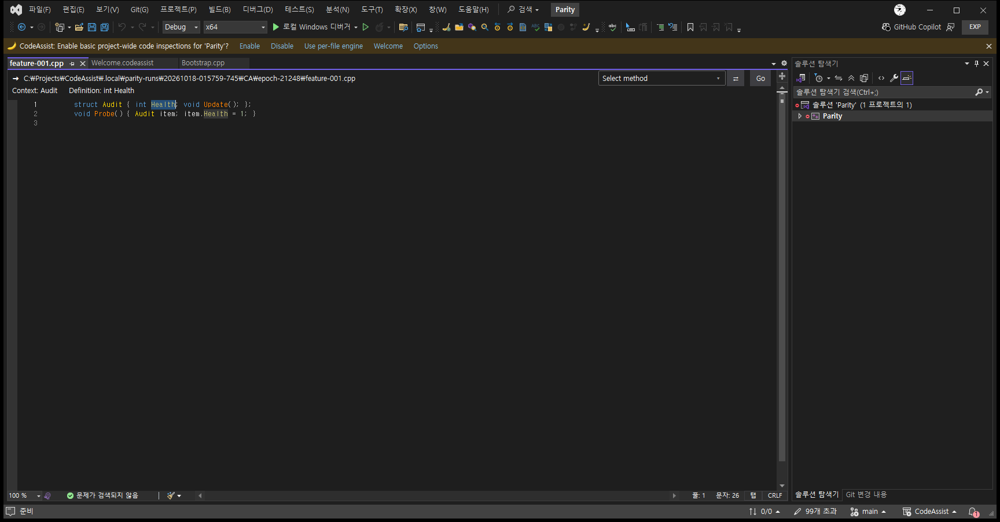
참고 화면](../assets/imports/docs/validation/automated-runner-20261018/20261018-015759-745/screenshots/CA-feature-001-after.png)
feature-002 Feature 2
VA / before / captured [참고 화면](../assets/imports/docs/validation/automated-runner-20261018/20261018-015759-745/screenshots/VA-feature-002-before.png) VA / dialog / captured [참고 화면](../assets/imports/docs/validation/automated-runner-20261018/20261018-015759-745/screenshots/VA-feature-002-dialog.png) VA / after / captured [
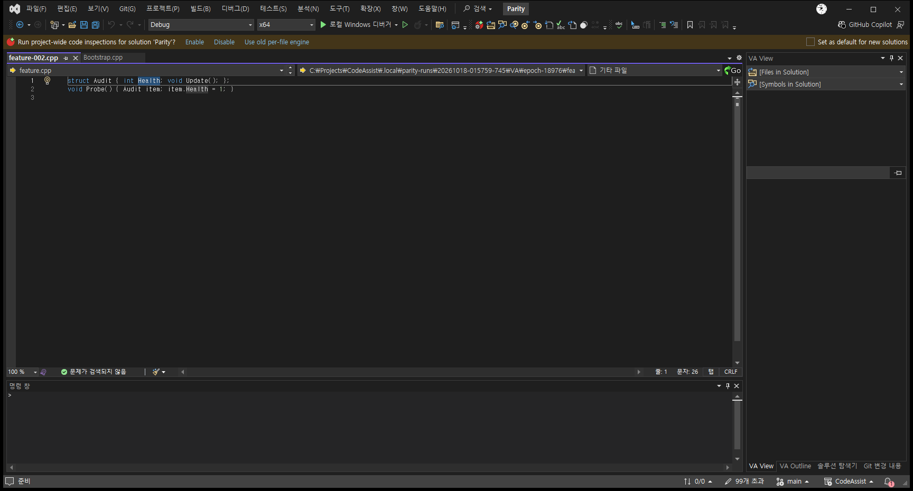
참고 화면](../assets/imports/docs/validation/automated-runner-20261018/20261018-015759-745/screenshots/VA-feature-002-after.png)
CA / before / captured [참고 화면](../assets/imports/docs/validation/automated-runner-20261018/20261018-015759-745/screenshots/CA-feature-002-before.png) CA / dialog / captured [참고 화면](../assets/imports/docs/validation/automated-runner-20261018/20261018-015759-745/screenshots/CA-feature-002-dialog.png) CA / after / captured [참고 화면](../assets/imports/docs/validation/automated-runner-20261018/20261018-015759-745/screenshots/CA-feature-002-after.png)
feature-003 Feature 3
VA / before / captured [참고 화면](../assets/imports/docs/validation/automated-runner-20261018/20261018-015759-745/screenshots/VA-feature-003-before.png) VA / dialog / captured [참고 화면](../assets/imports/docs/validation/automated-runner-20261018/20261018-015759-745/screenshots/VA-feature-003-dialog.png) VA / after / captured [
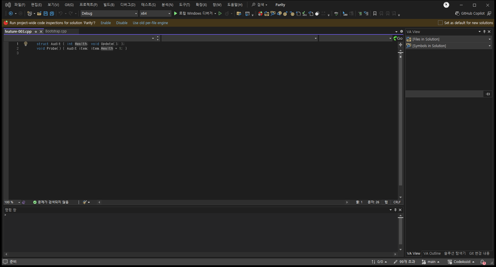
참고 화면](../assets/imports/docs/validation/automated-runner-20261018/20261018-015759-745/screenshots/VA-feature-003-after.png)
CA / before / captured [참고 화면](../assets/imports/docs/validation/automated-runner-20261018/20261018-015759-745/screenshots/CA-feature-003-before.png) CA / dialog / captured [참고 화면](../assets/imports/docs/validation/automated-runner-20261018/20261018-015759-745/screenshots/CA-feature-003-dialog.png) CA / after / captured [참고 화면](../assets/imports/docs/validation/automated-runner-20261018/20261018-015759-745/screenshots/CA-feature-003-after.png)
feature-004 Feature 4
VA / before / captured [참고 화면](../assets/imports/docs/validation/automated-runner-20261018/20261018-015759-745/screenshots/VA-feature-004-before.png) VA / dialog / captured [참고 화면](../assets/imports/docs/validation/automated-runner-20261018/20261018-015759-745/screenshots/VA-feature-004-dialog.png) VA / after / captured [
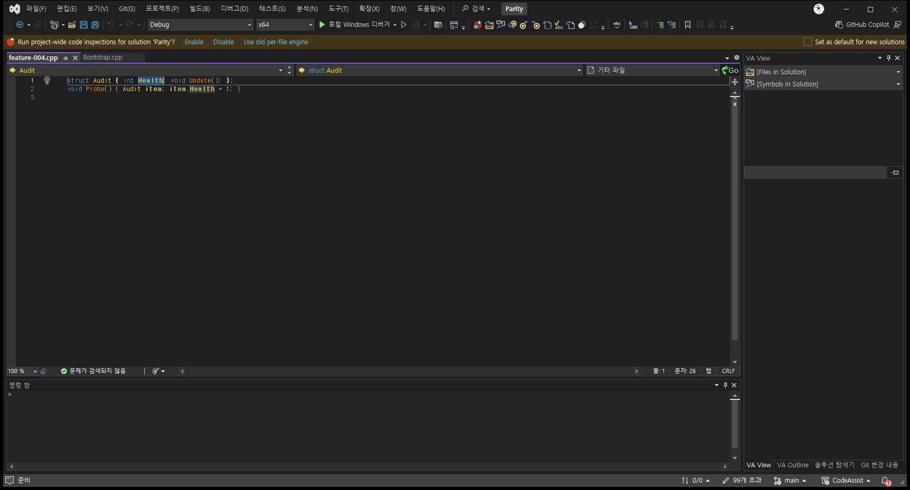
참고 화면](../assets/imports/docs/validation/automated-runner-20261018/20261018-015759-745/screenshots/VA-feature-004-after.png)
CA / before / captured [참고 화면](../assets/imports/docs/validation/automated-runner-20261018/20261018-015759-745/screenshots/CA-feature-004-before.png) CA / dialog / captured [
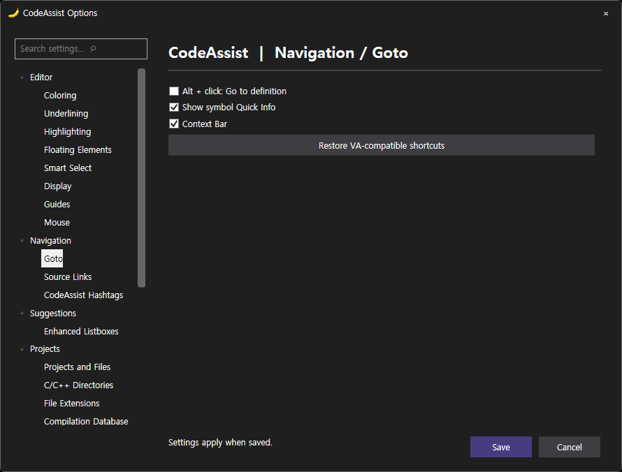
참고 화면](../assets/imports/docs/validation/automated-runner-20261018/20261018-015759-745/screenshots/CA-feature-004-dialog.png) CA / after / captured [참고 화면](../assets/imports/docs/validation/automated-runner-20261018/20261018-015759-745/screenshots/CA-feature-004-after.png)
feature-005 Feature 5
VA / before / captured [참고 화면](../assets/imports/docs/validation/automated-runner-20261018/20261018-015759-745/screenshots/VA-feature-005-before.png) VA / dialog / missing VA / after / captured [참고 화면](../assets/imports/docs/validation/automated-runner-20261018/20261018-015759-745/screenshots/VA-feature-005-after.png)
CA / before / captured [참고 화면](../assets/imports/docs/validation/automated-runner-20261018/20261018-015759-745/screenshots/CA-feature-005-before.png) CA / dialog / captured [참고 화면](../assets/imports/docs/validation/automated-runner-20261018/20261018-015759-745/screenshots/CA-feature-005-dialog.png) CA / after / captured [참고 화면](../assets/imports/docs/validation/automated-runner-20261018/20261018-015759-745/screenshots/CA-feature-005-after.png)
feature-006 Feature 6
VA / before / captured [참고 화면](../assets/imports/docs/validation/automated-runner-20261018/20261018-015759-745/screenshots/VA-feature-006-before.png) VA / dialog / captured [참고 화면](../assets/imports/docs/validation/automated-runner-20261018/20261018-015759-745/screenshots/VA-feature-006-dialog.png) VA / after / captured [
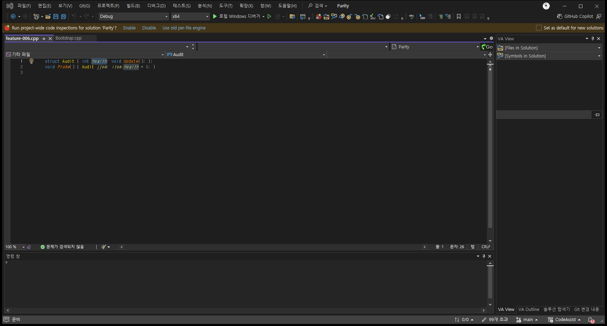
참고 화면](../assets/imports/docs/validation/automated-runner-20261018/20261018-015759-745/screenshots/VA-feature-006-after.png)
CA / before / captured [참고 화면](../assets/imports/docs/validation/automated-runner-20261018/20261018-015759-745/screenshots/CA-feature-006-before.png) CA / dialog / captured [
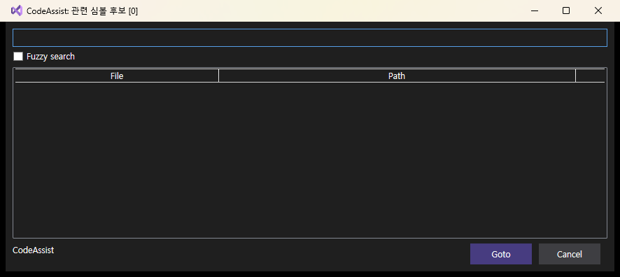
참고 화면](../assets/imports/docs/validation/automated-runner-20261018/20261018-015759-745/screenshots/CA-feature-006-dialog.png) CA / after / captured [참고 화면](../assets/imports/docs/validation/automated-runner-20261018/20261018-015759-745/screenshots/CA-feature-006-after.png)
feature-007 Feature 7
VA / before / captured [참고 화면](../assets/imports/docs/validation/automated-runner-20261018/20261018-015759-745/screenshots/VA-feature-007-before.png) VA / dialog / captured [참고 화면](../assets/imports/docs/validation/automated-runner-20261018/20261018-015759-745/screenshots/VA-feature-007-dialog.png) VA / after / captured [참고 화면](../assets/imports/docs/validation/automated-runner-20261018/20261018-015759-745/screenshots/VA-feature-007-after.png)
CA / before / captured [참고 화면](../assets/imports/docs/validation/automated-runner-20261018/20261018-015759-745/screenshots/CA-feature-007-before.png) CA / dialog / captured [참고 화면](../assets/imports/docs/validation/automated-runner-20261018/20261018-015759-745/screenshots/CA-feature-007-dialog.png) CA / after / captured [참고 화면](../assets/imports/docs/validation/automated-runner-20261018/20261018-015759-745/screenshots/CA-feature-007-after.png)
feature-008 Feature 8
VA / before / captured [참고 화면](../assets/imports/docs/validation/automated-runner-20261018/20261018-015759-745/screenshots/VA-feature-008-before.png) VA / dialog / captured [참고 화면](../assets/imports/docs/validation/automated-runner-20261018/20261018-015759-745/screenshots/VA-feature-008-dialog.png) VA / after / captured [참고 화면](../assets/imports/docs/validation/automated-runner-20261018/20261018-015759-745/screenshots/VA-feature-008-after.png)
CA / before / captured [참고 화면](../assets/imports/docs/validation/automated-runner-20261018/20261018-015759-745/screenshots/CA-feature-008-before.png) CA / dialog / captured [참고 화면](../assets/imports/docs/validation/automated-runner-20261018/20261018-015759-745/screenshots/CA-feature-008-dialog.png) CA / after / captured [참고 화면](../assets/imports/docs/validation/automated-runner-20261018/20261018-015759-745/screenshots/CA-feature-008-after.png)
scope-next Feature 9
VA / before / captured [참고 화면](../assets/imports/docs/validation/automated-runner-20261018/20261018-015759-745/screenshots/VA-scope-next-before.png) VA / dialog / missing VA / after / captured [
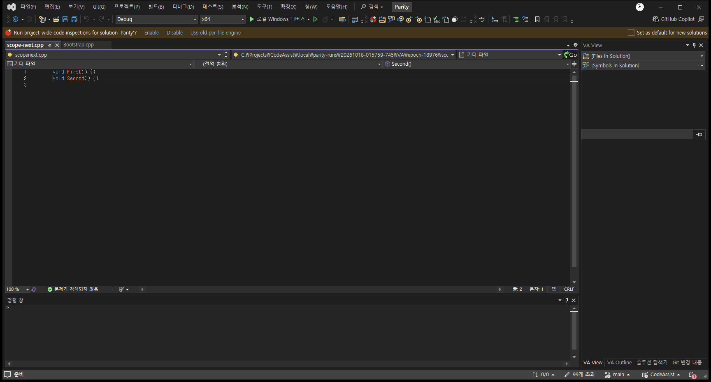
참고 화면](../assets/imports/docs/validation/automated-runner-20261018/20261018-015759-745/screenshots/VA-scope-next-after.png)
CA / before / captured [
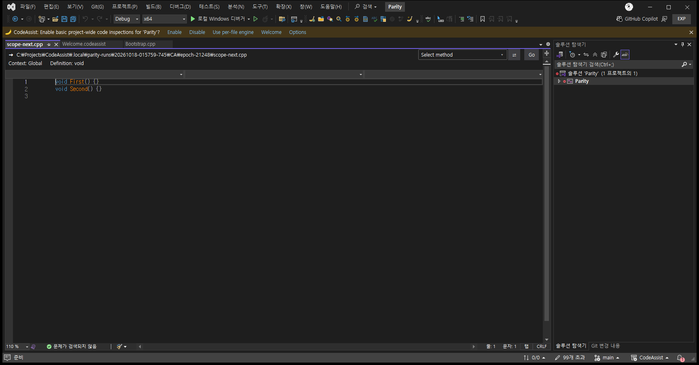
참고 화면](../assets/imports/docs/validation/automated-runner-20261018/20261018-015759-745/screenshots/CA-scope-next-before.png) CA / dialog / missing CA / after / captured [참고 화면](../assets/imports/docs/validation/automated-runner-20261018/20261018-015759-745/screenshots/CA-scope-next-after.png)
feature-010 Feature 10
VA / before / captured [참고 화면](../assets/imports/docs/validation/automated-runner-20261018/20261018-015759-745/screenshots/VA-feature-010-before.png) VA / dialog / captured [참고 화면](../assets/imports/docs/validation/automated-runner-20261018/20261018-015759-745/screenshots/VA-feature-010-dialog.png) VA / after / captured [참고 화면](../assets/imports/docs/validation/automated-runner-20261018/20261018-015759-745/screenshots/VA-feature-010-after.png)
CA / before / captured [참고 화면](../assets/imports/docs/validation/automated-runner-20261018/20261018-015759-745/screenshots/CA-feature-010-before.png) CA / dialog / captured [참고 화면](../assets/imports/docs/validation/automated-runner-20261018/20261018-015759-745/screenshots/CA-feature-010-dialog.png) CA / after / captured [참고 화면](../assets/imports/docs/validation/automated-runner-20261018/20261018-015759-745/screenshots/CA-feature-010-after.png)
feature-011 Feature 11
VA / before / captured [
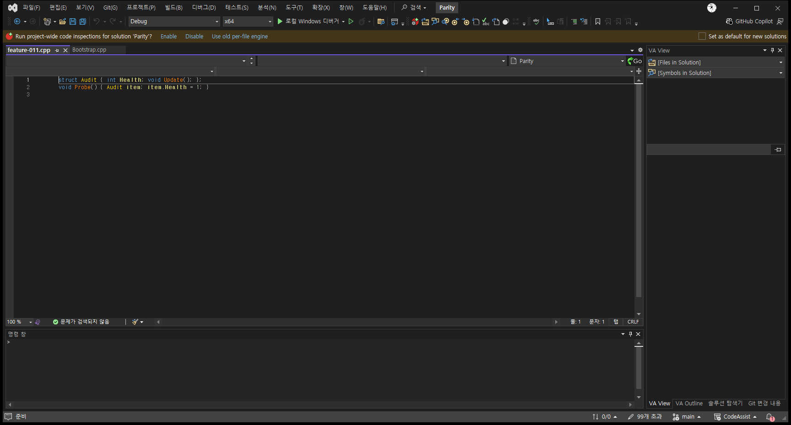
참고 화면](../assets/imports/docs/validation/automated-runner-20261018/20261018-015759-745/screenshots/VA-feature-011-before.png) VA / dialog / captured [참고 화면](../assets/imports/docs/validation/automated-runner-20261018/20261018-015759-745/screenshots/VA-feature-011-dialog.png) VA / after / captured [참고 화면](../assets/imports/docs/validation/automated-runner-20261018/20261018-015759-745/screenshots/VA-feature-011-after.png)
CA / before / captured [참고 화면](../assets/imports/docs/validation/automated-runner-20261018/20261018-015759-745/screenshots/CA-feature-011-before.png) CA / dialog / captured [
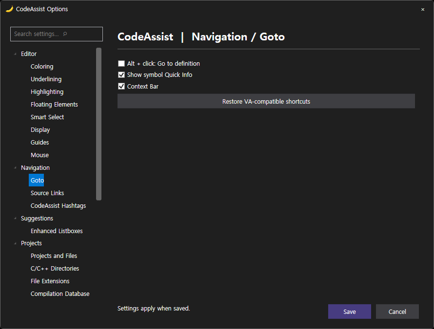
참고 화면](../assets/imports/docs/validation/automated-runner-20261018/20261018-015759-745/screenshots/CA-feature-011-dialog.png) CA / after / captured [참고 화면](../assets/imports/docs/validation/automated-runner-20261018/20261018-015759-745/screenshots/CA-feature-011-after.png)
feature-012 Feature 12
VA / before / captured [참고 화면](../assets/imports/docs/validation/automated-runner-20261018/20261018-015759-745/screenshots/VA-feature-012-before.png) VA / dialog / captured [참고 화면](../assets/imports/docs/validation/automated-runner-20261018/20261018-015759-745/screenshots/VA-feature-012-dialog.png) VA / after / captured [참고 화면](../assets/imports/docs/validation/automated-runner-20261018/20261018-015759-745/screenshots/VA-feature-012-after.png)
CA / before / captured [참고 화면](../assets/imports/docs/validation/automated-runner-20261018/20261018-015759-745/screenshots/CA-feature-012-before.png) CA / dialog / captured [참고 화면](../assets/imports/docs/validation/automated-runner-20261018/20261018-015759-745/screenshots/CA-feature-012-dialog.png) CA / after / captured [참고 화면](../assets/imports/docs/validation/automated-runner-20261018/20261018-015759-745/screenshots/CA-feature-012-after.png)
feature-013 Feature 13
VA / before / captured [참고 화면](../assets/imports/docs/validation/automated-runner-20261018/20261018-015759-745/screenshots/VA-feature-013-before.png) VA / dialog / captured [참고 화면](../assets/imports/docs/validation/automated-runner-20261018/20261018-015759-745/screenshots/VA-feature-013-dialog.png) VA / after / captured [
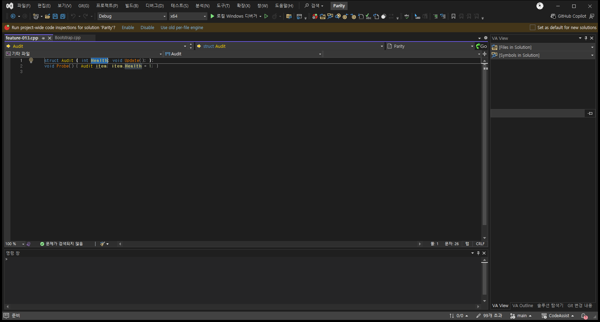
참고 화면](../assets/imports/docs/validation/automated-runner-20261018/20261018-015759-745/screenshots/VA-feature-013-after.png)
CA / before / captured [참고 화면](../assets/imports/docs/validation/automated-runner-20261018/20261018-015759-745/screenshots/CA-feature-013-before.png) CA / dialog / captured [
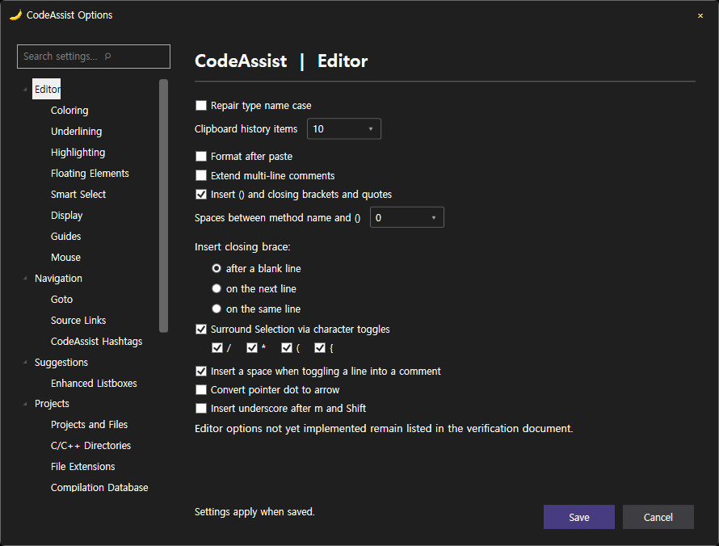
참고 화면](../assets/imports/docs/validation/automated-runner-20261018/20261018-015759-745/screenshots/CA-feature-013-dialog.png) CA / after / captured [참고 화면](../assets/imports/docs/validation/automated-runner-20261018/20261018-015759-745/screenshots/CA-feature-013-after.png)
feature-014 Feature 14
VA / before / captured [
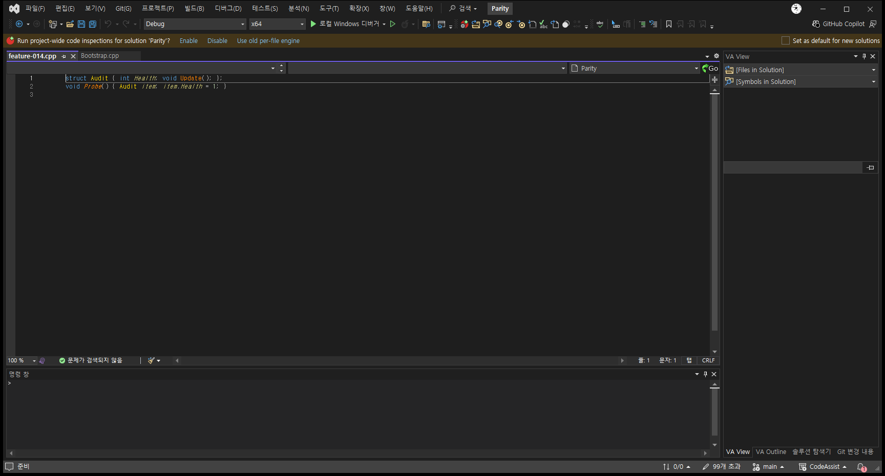
참고 화면](../assets/imports/docs/validation/automated-runner-20261018/20261018-015759-745/screenshots/VA-feature-014-before.png) VA / dialog / captured [참고 화면](../assets/imports/docs/validation/automated-runner-20261018/20261018-015759-745/screenshots/VA-feature-014-dialog.png) VA / after / captured [참고 화면](../assets/imports/docs/validation/automated-runner-20261018/20261018-015759-745/screenshots/VA-feature-014-after.png)
CA / before / captured [참고 화면](../assets/imports/docs/validation/automated-runner-20261018/20261018-015759-745/screenshots/CA-feature-014-before.png) CA / dialog / captured [참고 화면](../assets/imports/docs/validation/automated-runner-20261018/20261018-015759-745/screenshots/CA-feature-014-dialog.png) CA / after / captured [참고 화면](../assets/imports/docs/validation/automated-runner-20261018/20261018-015759-745/screenshots/CA-feature-014-after.png)
feature-015 Feature 15
VA / before / captured [참고 화면](../assets/imports/docs/validation/automated-runner-20261018/20261018-015759-745/screenshots/VA-feature-015-before.png) VA / dialog / captured [참고 화면](../assets/imports/docs/validation/automated-runner-20261018/20261018-015759-745/screenshots/VA-feature-015-dialog.png) VA / after / captured [참고 화면](../assets/imports/docs/validation/automated-runner-20261018/20261018-015759-745/screenshots/VA-feature-015-after.png)
CA / before / captured [참고 화면](../assets/imports/docs/validation/automated-runner-20261018/20261018-015759-745/screenshots/CA-feature-015-before.png) CA / dialog / captured [참고 화면](../assets/imports/docs/validation/automated-runner-20261018/20261018-015759-745/screenshots/CA-feature-015-dialog.png) CA / after / captured [참고 화면](../assets/imports/docs/validation/automated-runner-20261018/20261018-015759-745/screenshots/CA-feature-015-after.png)
feature-016 Feature 16
VA / before / captured [참고 화면](../assets/imports/docs/validation/automated-runner-20261018/20261018-015759-745/screenshots/VA-feature-016-before.png) VA / dialog / missing VA / after / captured [
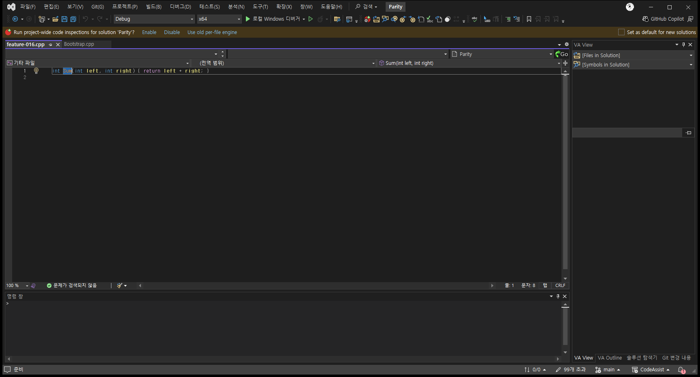
참고 화면](../assets/imports/docs/validation/automated-runner-20261018/20261018-015759-745/screenshots/VA-feature-016-after.png)
CA / before / captured [참고 화면](../assets/imports/docs/validation/automated-runner-20261018/20261018-015759-745/screenshots/CA-feature-016-before.png) CA / dialog / captured [참고 화면](../assets/imports/docs/validation/automated-runner-20261018/20261018-015759-745/screenshots/CA-feature-016-dialog.png) CA / after / captured [참고 화면](../assets/imports/docs/validation/automated-runner-20261018/20261018-015759-745/screenshots/CA-feature-016-after.png)
feature-017 Feature 17
VA / before / captured [참고 화면](../assets/imports/docs/validation/automated-runner-20261018/20261018-015759-745/screenshots/VA-feature-017-before.png) VA / dialog / missing VA / after / captured [참고 화면](../assets/imports/docs/validation/automated-runner-20261018/20261018-015759-745/screenshots/VA-feature-017-after.png)
CA / before / captured [참고 화면](../assets/imports/docs/validation/automated-runner-20261018/20261018-015759-745/screenshots/CA-feature-017-before.png) CA / dialog / captured [참고 화면](../assets/imports/docs/validation/automated-runner-20261018/20261018-015759-745/screenshots/CA-feature-017-dialog.png) CA / after / captured [참고 화면](../assets/imports/docs/validation/automated-runner-20261018/20261018-015759-745/screenshots/CA-feature-017-after.png)
feature-018 Feature 18
VA / before / captured [
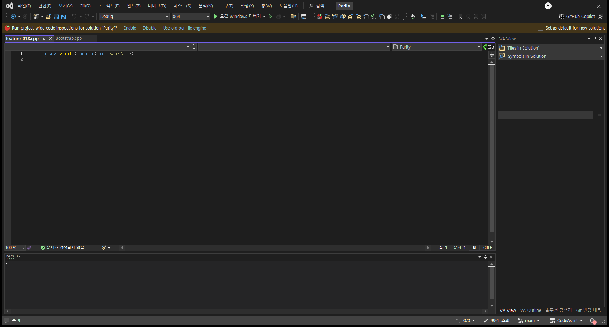
참고 화면](../assets/imports/docs/validation/automated-runner-20261018/20261018-015759-745/screenshots/VA-feature-018-before.png) VA / dialog / missing VA / after / captured [
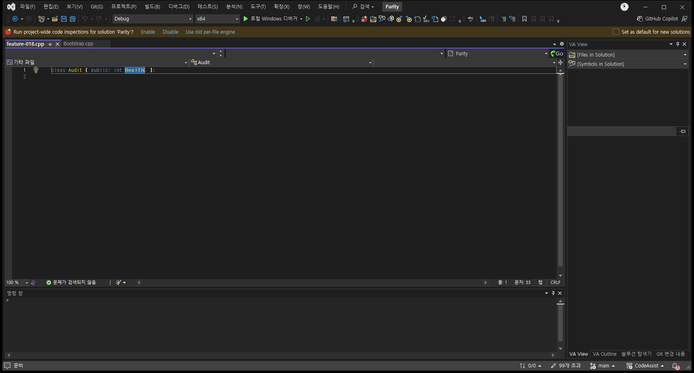
참고 화면](../assets/imports/docs/validation/automated-runner-20261018/20261018-015759-745/screenshots/VA-feature-018-after.png)
CA / before / captured [참고 화면](../assets/imports/docs/validation/automated-runner-20261018/20261018-015759-745/screenshots/CA-feature-018-before.png) CA / dialog / captured [
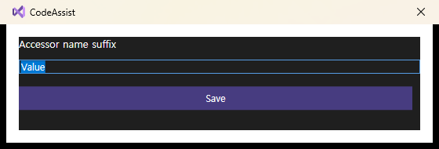
참고 화면](../assets/imports/docs/validation/automated-runner-20261018/20261018-015759-745/screenshots/CA-feature-018-dialog.png) CA / after / captured [참고 화면](../assets/imports/docs/validation/automated-runner-20261018/20261018-015759-745/screenshots/CA-feature-018-after.png)
feature-019 Feature 19
VA / before / captured [참고 화면](../assets/imports/docs/validation/automated-runner-20261018/20261018-015759-745/screenshots/VA-feature-019-before.png) VA / dialog / captured [참고 화면](../assets/imports/docs/validation/automated-runner-20261018/20261018-015759-745/screenshots/VA-feature-019-dialog.png) VA / after / captured [
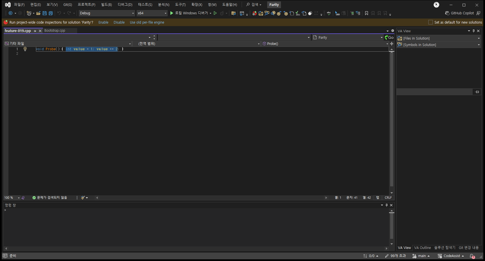
참고 화면](../assets/imports/docs/validation/automated-runner-20261018/20261018-015759-745/screenshots/VA-feature-019-after.png)
CA / before / captured [참고 화면](../assets/imports/docs/validation/automated-runner-20261018/20261018-015759-745/screenshots/CA-feature-019-before.png) CA / dialog / captured [
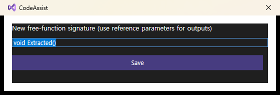
참고 화면](../assets/imports/docs/validation/automated-runner-20261018/20261018-015759-745/screenshots/CA-feature-019-dialog.png) CA / after / captured [참고 화면](../assets/imports/docs/validation/automated-runner-20261018/20261018-015759-745/screenshots/CA-feature-019-after.png)
feature-020 Feature 20
VA / before / captured [참고 화면](../assets/imports/docs/validation/automated-runner-20261018/20261018-015759-745/screenshots/VA-feature-020-before.png) VA / dialog / missing VA / after / captured [참고 화면](../assets/imports/docs/validation/automated-runner-20261018/20261018-015759-745/screenshots/VA-feature-020-after.png)
CA / before / captured [참고 화면](../assets/imports/docs/validation/automated-runner-20261018/20261018-015759-745/screenshots/CA-feature-020-before.png) CA / dialog / missing CA / after / captured [참고 화면](../assets/imports/docs/validation/automated-runner-20261018/20261018-015759-745/screenshots/CA-feature-020-after.png)
feature-021 Feature 21
VA / before / captured [참고 화면](../assets/imports/docs/validation/automated-runner-20261018/20261018-015759-745/screenshots/VA-feature-021-before.png) VA / dialog / missing VA / after / captured [참고 화면](../assets/imports/docs/validation/automated-runner-20261018/20261018-015759-745/screenshots/VA-feature-021-after.png)
CA / before / captured [참고 화면](../assets/imports/docs/validation/automated-runner-20261018/20261018-015759-745/screenshots/CA-feature-021-before.png) CA / dialog / missing CA / after / captured [참고 화면](../assets/imports/docs/validation/automated-runner-20261018/20261018-015759-745/screenshots/CA-feature-021-after.png)
feature-022 Feature 22
VA / before / captured [참고 화면](../assets/imports/docs/validation/automated-runner-20261018/20261018-015759-745/screenshots/VA-feature-022-before.png) VA / dialog / missing VA / after / captured [참고 화면](../assets/imports/docs/validation/automated-runner-20261018/20261018-015759-745/screenshots/VA-feature-022-after.png)
CA / before / captured [참고 화면](../assets/imports/docs/validation/automated-runner-20261018/20261018-015759-745/screenshots/CA-feature-022-before.png) CA / dialog / missing CA / after / captured [참고 화면](../assets/imports/docs/validation/automated-runner-20261018/20261018-015759-745/screenshots/CA-feature-022-after.png)
feature-023 Feature 23
VA / before / captured [참고 화면](../assets/imports/docs/validation/automated-runner-20261018/20261018-015759-745/screenshots/VA-feature-023-before.png) VA / dialog / missing VA / after / captured [참고 화면](../assets/imports/docs/validation/automated-runner-20261018/20261018-015759-745/screenshots/VA-feature-023-after.png)
CA / before / captured [참고 화면](../assets/imports/docs/validation/automated-runner-20261018/20261018-015759-745/screenshots/CA-feature-023-before.png) CA / dialog / captured [참고 화면](../assets/imports/docs/validation/automated-runner-20261018/20261018-015759-745/screenshots/CA-feature-023-dialog.png) CA / after / captured [참고 화면](../assets/imports/docs/validation/automated-runner-20261018/20261018-015759-745/screenshots/CA-feature-023-after.png)
feature-024 Feature 24
VA / before / captured [참고 화면](../assets/imports/docs/validation/automated-runner-20261018/20261018-015759-745/screenshots/VA-feature-024-before.png) VA / dialog / missing VA / after / captured [참고 화면](../assets/imports/docs/validation/automated-runner-20261018/20261018-015759-745/screenshots/VA-feature-024-after.png)
CA / before / captured [참고 화면](../assets/imports/docs/validation/automated-runner-20261018/20261018-015759-745/screenshots/CA-feature-024-before.png) CA / dialog / captured [
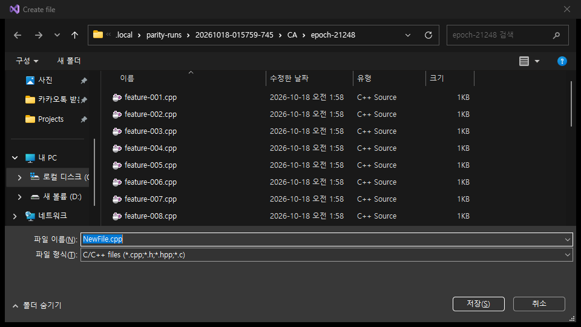
참고 화면](../assets/imports/docs/validation/automated-runner-20261018/20261018-015759-745/screenshots/CA-feature-024-dialog.png) CA / after / captured [참고 화면](../assets/imports/docs/validation/automated-runner-20261018/20261018-015759-745/screenshots/CA-feature-024-after.png)
feature-025 Feature 25
VA / before / captured [참고 화면](../assets/imports/docs/validation/automated-runner-20261018/20261018-015759-745/screenshots/VA-feature-025-before.png) VA / dialog / missing VA / after / captured [참고 화면](../assets/imports/docs/validation/automated-runner-20261018/20261018-015759-745/screenshots/VA-feature-025-after.png)
CA / before / captured [참고 화면](../assets/imports/docs/validation/automated-runner-20261018/20261018-015759-745/screenshots/CA-feature-025-before.png) CA / dialog / captured [참고 화면](../assets/imports/docs/validation/automated-runner-20261018/20261018-015759-745/screenshots/CA-feature-025-dialog.png) CA / after / captured [
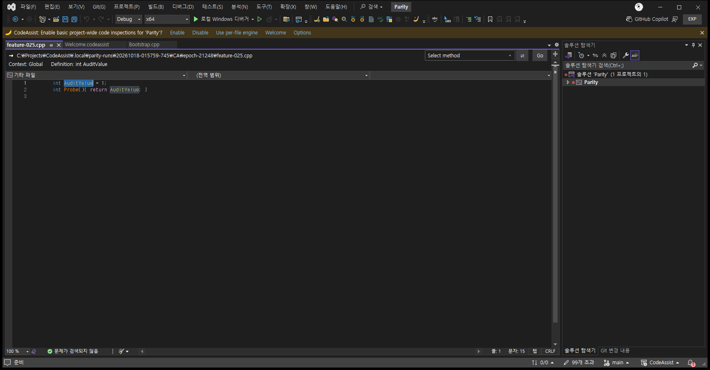
참고 화면](../assets/imports/docs/validation/automated-runner-20261018/20261018-015759-745/screenshots/CA-feature-025-after.png)
feature-026 Feature 26
VA / before / captured [참고 화면](../assets/imports/docs/validation/automated-runner-20261018/20261018-015759-745/screenshots/VA-feature-026-before.png) VA / dialog / captured [참고 화면](../assets/imports/docs/validation/automated-runner-20261018/20261018-015759-745/screenshots/VA-feature-026-dialog.png) VA / after / captured [참고 화면](../assets/imports/docs/validation/automated-runner-20261018/20261018-015759-745/screenshots/VA-feature-026-after.png)
CA / before / captured [참고 화면](../assets/imports/docs/validation/automated-runner-20261018/20261018-015759-745/screenshots/CA-feature-026-before.png) CA / dialog / captured [
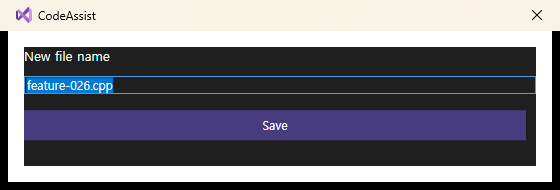
참고 화면](../assets/imports/docs/validation/automated-runner-20261018/20261018-015759-745/screenshots/CA-feature-026-dialog.png) CA / after / captured [참고 화면](../assets/imports/docs/validation/automated-runner-20261018/20261018-015759-745/screenshots/CA-feature-026-after.png)
feature-027 Feature 27
VA / before / captured [참고 화면](../assets/imports/docs/validation/automated-runner-20261018/20261018-015759-745/screenshots/VA-feature-027-before.png) VA / dialog / missing VA / after / captured [참고 화면](../assets/imports/docs/validation/automated-runner-20261018/20261018-015759-745/screenshots/VA-feature-027-after.png)
CA / before / captured [참고 화면](../assets/imports/docs/validation/automated-runner-20261018/20261018-015759-745/screenshots/CA-feature-027-before.png) CA / dialog / captured [참고 화면](../assets/imports/docs/validation/automated-runner-20261018/20261018-015759-745/screenshots/CA-feature-027-dialog.png) CA / after / captured [참고 화면](../assets/imports/docs/validation/automated-runner-20261018/20261018-015759-745/screenshots/CA-feature-027-after.png)
feature-028 Feature 28
VA / before / captured [참고 화면](../assets/imports/docs/validation/automated-runner-20261018/20261018-015759-745/screenshots/VA-feature-028-before.png) VA / dialog / missing VA / after / captured [참고 화면](../assets/imports/docs/validation/automated-runner-20261018/20261018-015759-745/screenshots/VA-feature-028-after.png)
CA / before / captured [참고 화면](../assets/imports/docs/validation/automated-runner-20261018/20261018-015759-745/screenshots/CA-feature-028-before.png) CA / dialog / captured [
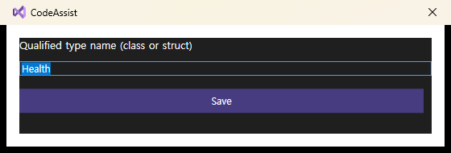
참고 화면](../assets/imports/docs/validation/automated-runner-20261018/20261018-015759-745/screenshots/CA-feature-028-dialog.png) CA / after / captured [참고 화면](../assets/imports/docs/validation/automated-runner-20261018/20261018-015759-745/screenshots/CA-feature-028-after.png)
feature-029 Feature 29
VA / before / captured [참고 화면](../assets/imports/docs/validation/automated-runner-20261018/20261018-015759-745/screenshots/VA-feature-029-before.png) VA / dialog / missing VA / after / captured [참고 화면](../assets/imports/docs/validation/automated-runner-20261018/20261018-015759-745/screenshots/VA-feature-029-after.png)
CA / before / captured [참고 화면](../assets/imports/docs/validation/automated-runner-20261018/20261018-015759-745/screenshots/CA-feature-029-before.png) CA / dialog / captured [
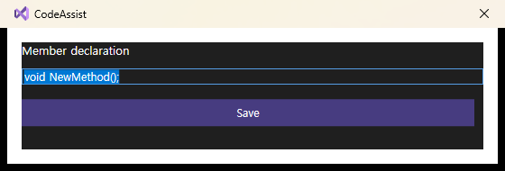
참고 화면](../assets/imports/docs/validation/automated-runner-20261018/20261018-015759-745/screenshots/CA-feature-029-dialog.png) CA / after / captured [참고 화면](../assets/imports/docs/validation/automated-runner-20261018/20261018-015759-745/screenshots/CA-feature-029-after.png)
feature-030 Feature 30
VA / before / captured [참고 화면](../assets/imports/docs/validation/automated-runner-20261018/20261018-015759-745/screenshots/VA-feature-030-before.png) VA / dialog / missing VA / after / captured [참고 화면](../assets/imports/docs/validation/automated-runner-20261018/20261018-015759-745/screenshots/VA-feature-030-after.png)
CA / before / captured [참고 화면](../assets/imports/docs/validation/automated-runner-20261018/20261018-015759-745/screenshots/CA-feature-030-before.png) CA / dialog / captured [
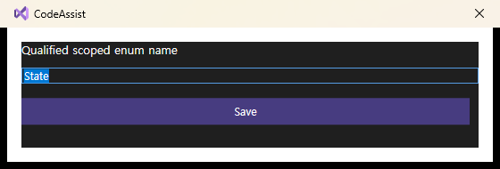
참고 화면](../assets/imports/docs/validation/automated-runner-20261018/20261018-015759-745/screenshots/CA-feature-030-dialog.png) CA / after / captured [참고 화면](../assets/imports/docs/validation/automated-runner-20261018/20261018-015759-745/screenshots/CA-feature-030-after.png)
feature-031 Feature 31
VA / before / captured [
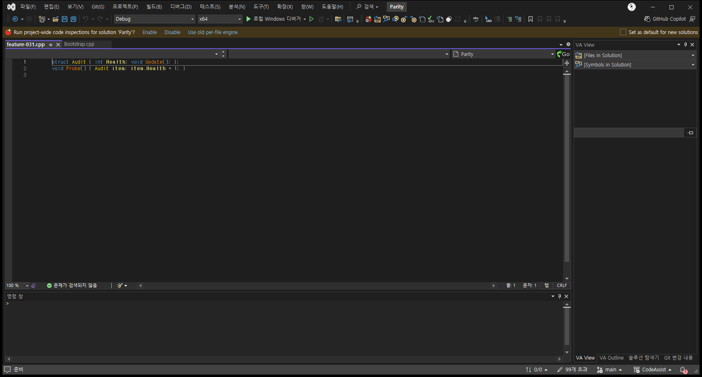
참고 화면](../assets/imports/docs/validation/automated-runner-20261018/20261018-015759-745/screenshots/VA-feature-031-before.png) VA / dialog / missing VA / after / captured [참고 화면](../assets/imports/docs/validation/automated-runner-20261018/20261018-015759-745/screenshots/VA-feature-031-after.png)
CA / before / captured [참고 화면](../assets/imports/docs/validation/automated-runner-20261018/20261018-015759-745/screenshots/CA-feature-031-before.png) CA / dialog / captured [
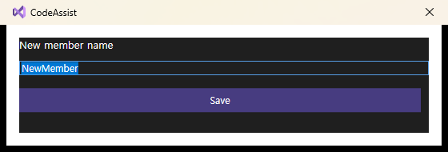
참고 화면](../assets/imports/docs/validation/automated-runner-20261018/20261018-015759-745/screenshots/CA-feature-031-dialog.png) CA / after / captured [참고 화면](../assets/imports/docs/validation/automated-runner-20261018/20261018-015759-745/screenshots/CA-feature-031-after.png)
feature-032 Feature 32
VA / before / captured [참고 화면](../assets/imports/docs/validation/automated-runner-20261018/20261018-015759-745/screenshots/VA-feature-032-before.png) VA / dialog / missing VA / after / captured [참고 화면](../assets/imports/docs/validation/automated-runner-20261018/20261018-015759-745/screenshots/VA-feature-032-after.png)
CA / before / captured [참고 화면](../assets/imports/docs/validation/automated-runner-20261018/20261018-015759-745/screenshots/CA-feature-032-before.png) CA / dialog / captured [
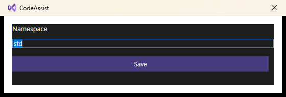
참고 화면](../assets/imports/docs/validation/automated-runner-20261018/20261018-015759-745/screenshots/CA-feature-032-dialog.png) CA / after / captured [참고 화면](../assets/imports/docs/validation/automated-runner-20261018/20261018-015759-745/screenshots/CA-feature-032-after.png)
feature-033 Feature 33
VA / before / captured [참고 화면](../assets/imports/docs/validation/automated-runner-20261018/20261018-015759-745/screenshots/VA-feature-033-before.png) VA / dialog / missing VA / after / captured [참고 화면](../assets/imports/docs/validation/automated-runner-20261018/20261018-015759-745/screenshots/VA-feature-033-after.png)
CA / before / captured [참고 화면](../assets/imports/docs/validation/automated-runner-20261018/20261018-015759-745/screenshots/CA-feature-033-before.png) CA / dialog / captured [
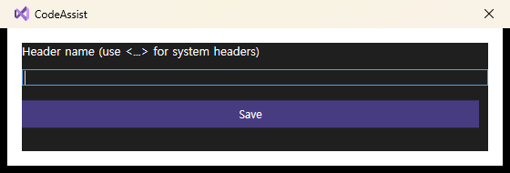
참고 화면](../assets/imports/docs/validation/automated-runner-20261018/20261018-015759-745/screenshots/CA-feature-033-dialog.png) CA / after / captured [참고 화면](../assets/imports/docs/validation/automated-runner-20261018/20261018-015759-745/screenshots/CA-feature-033-after.png)
feature-034 Feature 34
VA / before / captured [참고 화면](../assets/imports/docs/validation/automated-runner-20261018/20261018-015759-745/screenshots/VA-feature-034-before.png) VA / dialog / missing VA / after / captured [참고 화면](../assets/imports/docs/validation/automated-runner-20261018/20261018-015759-745/screenshots/VA-feature-034-after.png)
CA / before / captured [참고 화면](../assets/imports/docs/validation/automated-runner-20261018/20261018-015759-745/screenshots/CA-feature-034-before.png) CA / dialog / captured [
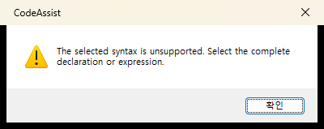
참고 화면](../assets/imports/docs/validation/automated-runner-20261018/20261018-015759-745/screenshots/CA-feature-034-dialog.png) CA / after / captured [참고 화면](../assets/imports/docs/validation/automated-runner-20261018/20261018-015759-745/screenshots/CA-feature-034-after.png)
feature-035 Feature 35
VA / before / captured [참고 화면](../assets/imports/docs/validation/automated-runner-20261018/20261018-015759-745/screenshots/VA-feature-035-before.png) VA / dialog / missing VA / after / captured [
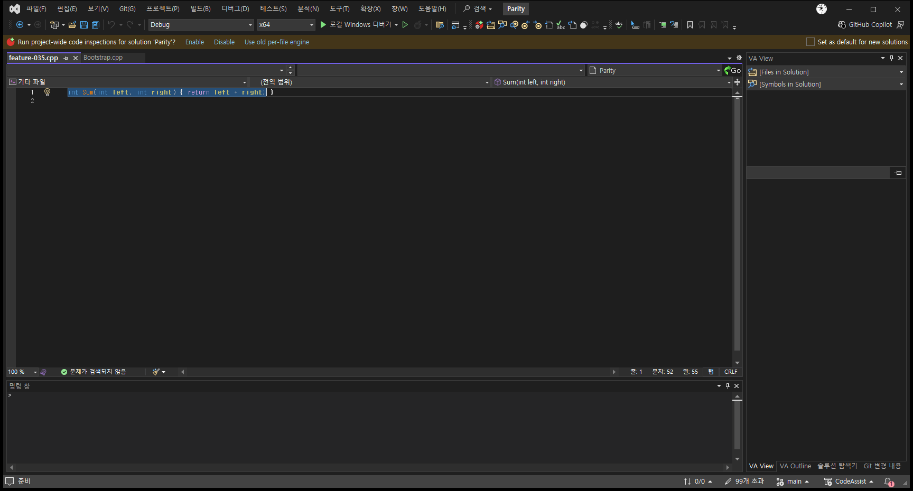
참고 화면](../assets/imports/docs/validation/automated-runner-20261018/20261018-015759-745/screenshots/VA-feature-035-after.png)
CA / before / captured [참고 화면](../assets/imports/docs/validation/automated-runner-20261018/20261018-015759-745/screenshots/CA-feature-035-before.png) CA / dialog / captured [
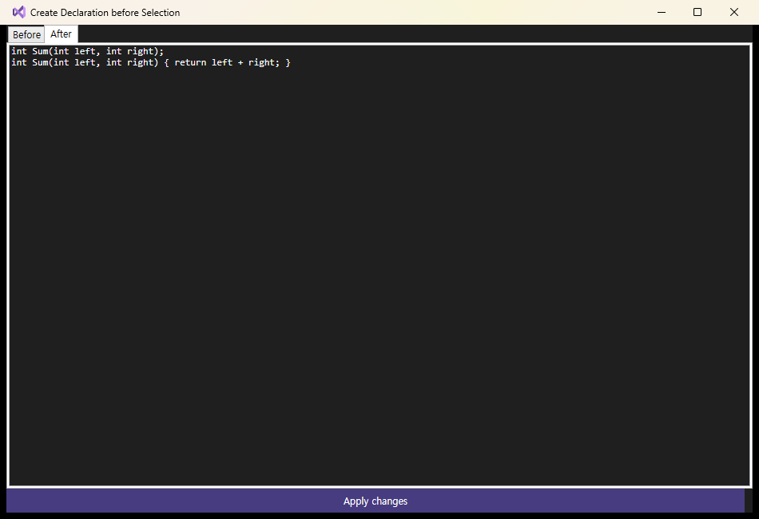
참고 화면](../assets/imports/docs/validation/automated-runner-20261018/20261018-015759-745/screenshots/CA-feature-035-dialog.png) CA / after / captured [
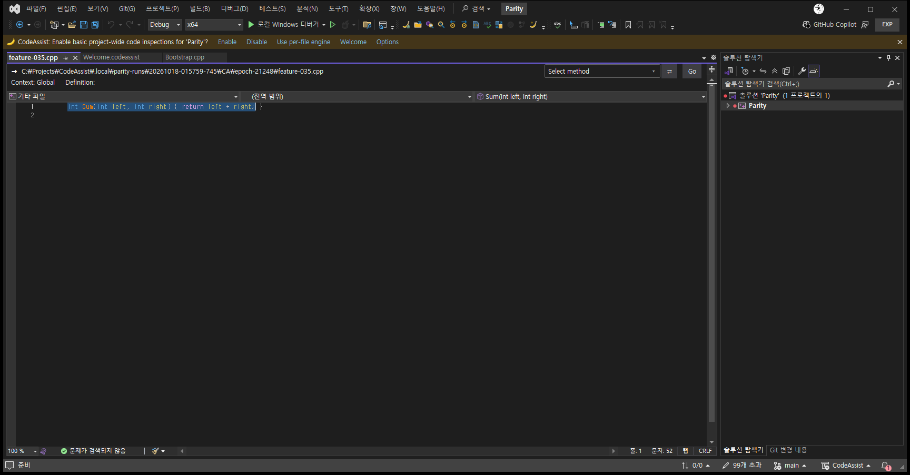
참고 화면](../assets/imports/docs/validation/automated-runner-20261018/20261018-015759-745/screenshots/CA-feature-035-after.png)
feature-036 Feature 36
VA / before / captured [참고 화면](../assets/imports/docs/validation/automated-runner-20261018/20261018-015759-745/screenshots/VA-feature-036-before.png) VA / dialog / captured [참고 화면](../assets/imports/docs/validation/automated-runner-20261018/20261018-015759-745/screenshots/VA-feature-036-dialog.png) VA / after / captured [참고 화면](../assets/imports/docs/validation/automated-runner-20261018/20261018-015759-745/screenshots/VA-feature-036-after.png)
CA / before / captured [참고 화면](../assets/imports/docs/validation/automated-runner-20261018/20261018-015759-745/screenshots/CA-feature-036-before.png) CA / dialog / captured [참고 화면](../assets/imports/docs/validation/automated-runner-20261018/20261018-015759-745/screenshots/CA-feature-036-dialog.png) CA / after / captured [참고 화면](../assets/imports/docs/validation/automated-runner-20261018/20261018-015759-745/screenshots/CA-feature-036-after.png)
feature-037 Feature 37
VA / before / captured [참고 화면](../assets/imports/docs/validation/automated-runner-20261018/20261018-015759-745/screenshots/VA-feature-037-before.png) VA / dialog / missing VA / after / captured [참고 화면](../assets/imports/docs/validation/automated-runner-20261018/20261018-015759-745/screenshots/VA-feature-037-after.png)
CA / before / captured [참고 화면](../assets/imports/docs/validation/automated-runner-20261018/20261018-015759-745/screenshots/CA-feature-037-before.png) CA / dialog / missing CA / after / captured [참고 화면](../assets/imports/docs/validation/automated-runner-20261018/20261018-015759-745/screenshots/CA-feature-037-after.png)
feature-038 Feature 38
VA / before / captured [
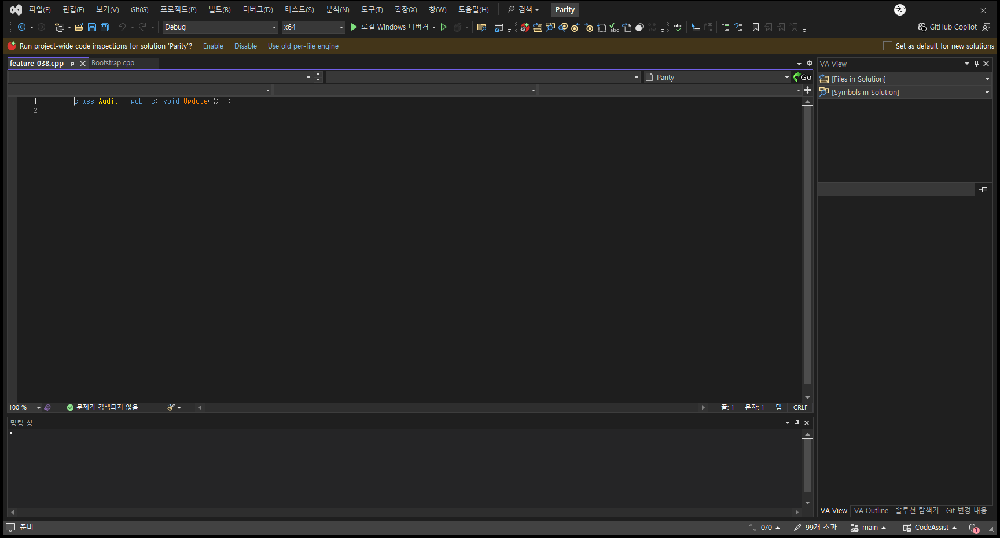
참고 화면](../assets/imports/docs/validation/automated-runner-20261018/20261018-015759-745/screenshots/VA-feature-038-before.png) VA / dialog / missing VA / after / captured [참고 화면](../assets/imports/docs/validation/automated-runner-20261018/20261018-015759-745/screenshots/VA-feature-038-after.png)
CA / before / captured [참고 화면](../assets/imports/docs/validation/automated-runner-20261018/20261018-015759-745/screenshots/CA-feature-038-before.png) CA / dialog / captured [참고 화면](../assets/imports/docs/validation/automated-runner-20261018/20261018-015759-745/screenshots/CA-feature-038-dialog.png) CA / after / captured [참고 화면](../assets/imports/docs/validation/automated-runner-20261018/20261018-015759-745/screenshots/CA-feature-038-after.png)
feature-039 Feature 39
VA / before / captured [참고 화면](../assets/imports/docs/validation/automated-runner-20261018/20261018-015759-745/screenshots/VA-feature-039-before.png) VA / dialog / missing VA / after / captured [참고 화면](../assets/imports/docs/validation/automated-runner-20261018/20261018-015759-745/screenshots/VA-feature-039-after.png)
CA / before / captured [참고 화면](../assets/imports/docs/validation/automated-runner-20261018/20261018-015759-745/screenshots/CA-feature-039-before.png) CA / dialog / captured [
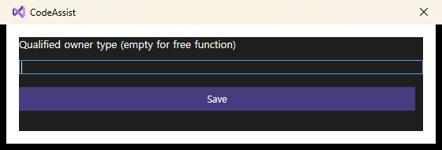
참고 화면](../assets/imports/docs/validation/automated-runner-20261018/20261018-015759-745/screenshots/CA-feature-039-dialog.png) CA / after / captured [참고 화면](../assets/imports/docs/validation/automated-runner-20261018/20261018-015759-745/screenshots/CA-feature-039-after.png)
feature-040 Feature 40
VA / before / captured [참고 화면](../assets/imports/docs/validation/automated-runner-20261018/20261018-015759-745/screenshots/VA-feature-040-before.png) VA / dialog / missing VA / after / captured [
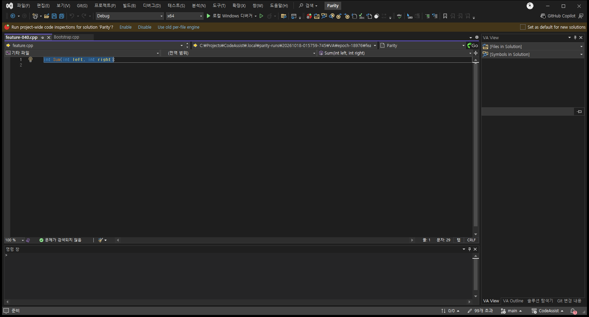
참고 화면](../assets/imports/docs/validation/automated-runner-20261018/20261018-015759-745/screenshots/VA-feature-040-after.png)
CA / before / captured [참고 화면](../assets/imports/docs/validation/automated-runner-20261018/20261018-015759-745/screenshots/CA-feature-040-before.png) CA / dialog / missing CA / after / captured [
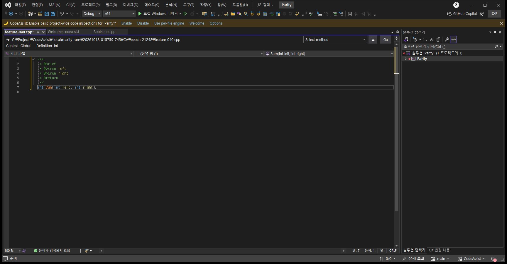
참고 화면](../assets/imports/docs/validation/automated-runner-20261018/20261018-015759-745/screenshots/CA-feature-040-after.png)
feature-041 Feature 41
VA / before / captured [참고 화면](../assets/imports/docs/validation/automated-runner-20261018/20261018-015759-745/screenshots/VA-feature-041-before.png) VA / dialog / missing VA / after / captured [참고 화면](../assets/imports/docs/validation/automated-runner-20261018/20261018-015759-745/screenshots/VA-feature-041-after.png)
CA / before / captured [참고 화면](../assets/imports/docs/validation/automated-runner-20261018/20261018-015759-745/screenshots/CA-feature-041-before.png) CA / dialog / captured [
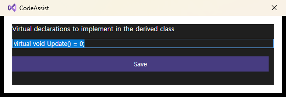
참고 화면](../assets/imports/docs/validation/automated-runner-20261018/20261018-015759-745/screenshots/CA-feature-041-dialog.png) CA / after / captured [참고 화면](../assets/imports/docs/validation/automated-runner-20261018/20261018-015759-745/screenshots/CA-feature-041-after.png)
acronym Feature 42
VA / before / captured [참고 화면](../assets/imports/docs/validation/automated-runner-20261018/20261018-015759-745/screenshots/VA-acronym-before.png) VA / dialog / missing VA / after / captured [참고 화면](../assets/imports/docs/validation/automated-runner-20261018/20261018-015759-745/screenshots/VA-acronym-after.png)
CA / before / captured [참고 화면](../assets/imports/docs/validation/automated-runner-20261018/20261018-015759-745/screenshots/CA-acronym-before.png) CA / dialog / missing CA / after / captured [참고 화면](../assets/imports/docs/validation/automated-runner-20261018/20261018-015759-745/screenshots/CA-acronym-after.png)
comment-continuation Feature 43
VA / before / captured [
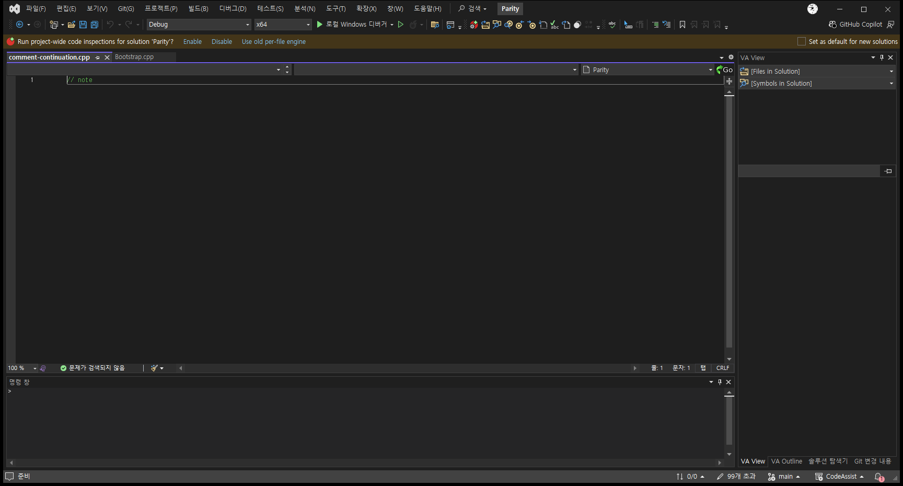
참고 화면](../assets/imports/docs/validation/automated-runner-20261018/20261018-015759-745/screenshots/VA-comment-continuation-before.png) VA / dialog / missing VA / after / captured [참고 화면](../assets/imports/docs/validation/automated-runner-20261018/20261018-015759-745/screenshots/VA-comment-continuation-after.png)
CA / before / captured [
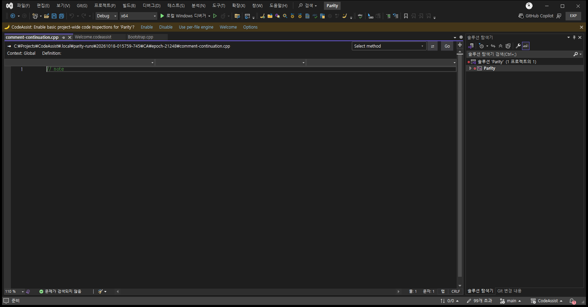
참고 화면](../assets/imports/docs/validation/automated-runner-20261018/20261018-015759-745/screenshots/CA-comment-continuation-before.png) CA / dialog / missing CA / after / captured [참고 화면](../assets/imports/docs/validation/automated-runner-20261018/20261018-015759-745/screenshots/CA-comment-continuation-after.png)
completion Feature 44
VA / before / captured [참고 화면](../assets/imports/docs/validation/automated-runner-20261018/20261018-015759-745/screenshots/VA-completion-before.png) VA / dialog / missing VA / after / captured [참고 화면](../assets/imports/docs/validation/automated-runner-20261018/20261018-015759-745/screenshots/VA-completion-after.png)
CA / before / captured [참고 화면](../assets/imports/docs/validation/automated-runner-20261018/20261018-015759-745/screenshots/CA-completion-before.png) CA / dialog / missing CA / after / captured [
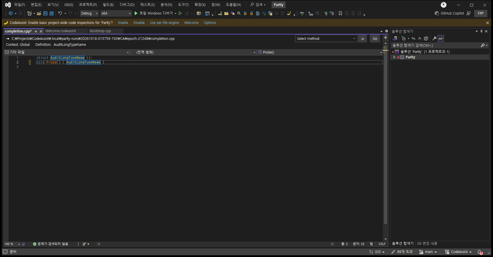
참고 화면](../assets/imports/docs/validation/automated-runner-20261018/20261018-015759-745/screenshots/CA-completion-after.png)
feature-045 Feature 45
VA / before / captured [참고 화면](../assets/imports/docs/validation/automated-runner-20261018/20261018-015759-745/screenshots/VA-feature-045-before.png) VA / dialog / captured [참고 화면](../assets/imports/docs/validation/automated-runner-20261018/20261018-015759-745/screenshots/VA-feature-045-dialog.png) VA / after / captured [참고 화면](../assets/imports/docs/validation/automated-runner-20261018/20261018-015759-745/screenshots/VA-feature-045-after.png)
CA / before / captured [참고 화면](../assets/imports/docs/validation/automated-runner-20261018/20261018-015759-745/screenshots/CA-feature-045-before.png) CA / dialog / captured [
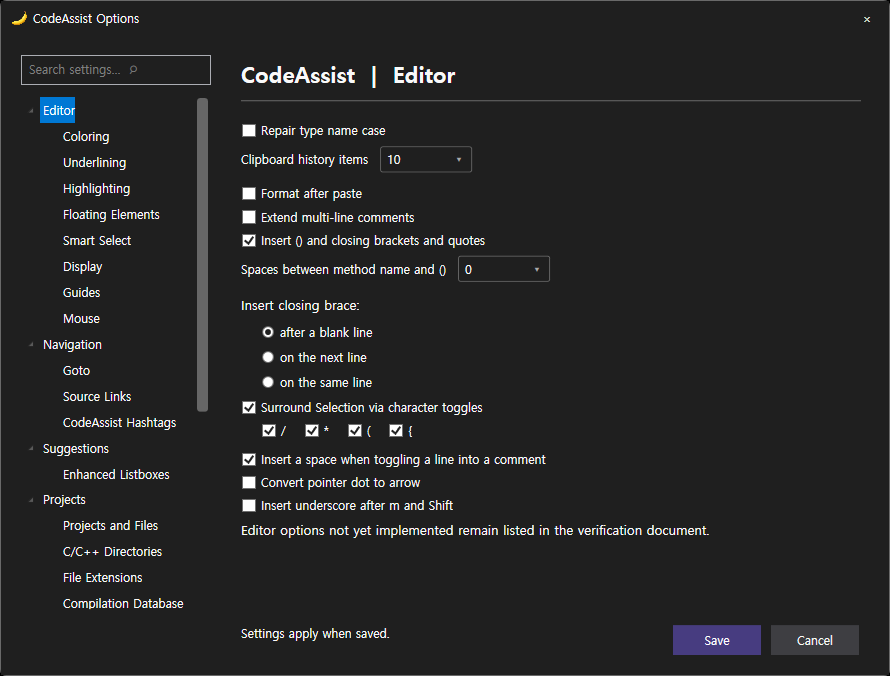
참고 화면](../assets/imports/docs/validation/automated-runner-20261018/20261018-015759-745/screenshots/CA-feature-045-dialog.png) CA / after / captured [참고 화면](../assets/imports/docs/validation/automated-runner-20261018/20261018-015759-745/screenshots/CA-feature-045-after.png)
pair-insert Feature 46
VA / before / captured [
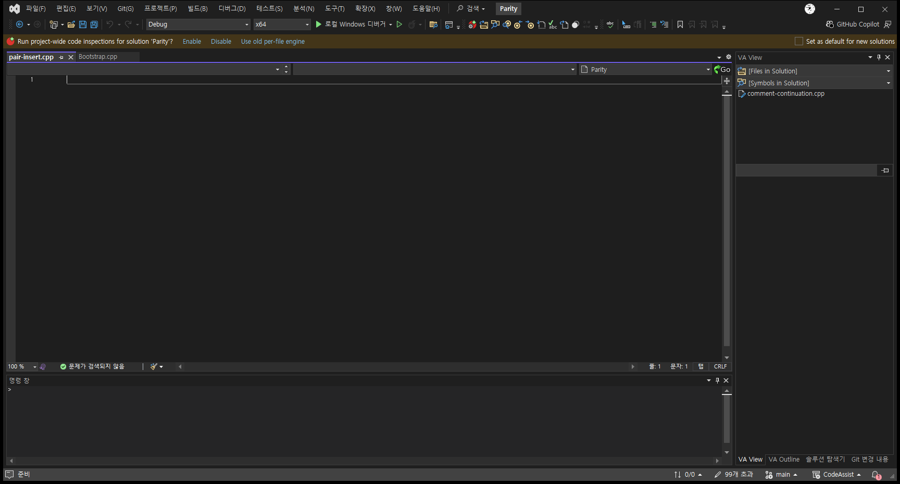
참고 화면](../assets/imports/docs/validation/automated-runner-20261018/20261018-015759-745/screenshots/VA-pair-insert-before.png) VA / dialog / missing VA / after / captured [참고 화면](../assets/imports/docs/validation/automated-runner-20261018/20261018-015759-745/screenshots/VA-pair-insert-after.png)
CA / before / captured [참고 화면](../assets/imports/docs/validation/automated-runner-20261018/20261018-015759-745/screenshots/CA-pair-insert-before.png) CA / dialog / missing CA / after / captured [참고 화면](../assets/imports/docs/validation/automated-runner-20261018/20261018-015759-745/screenshots/CA-pair-insert-after.png)
feature-047 Feature 47
VA / before / captured [
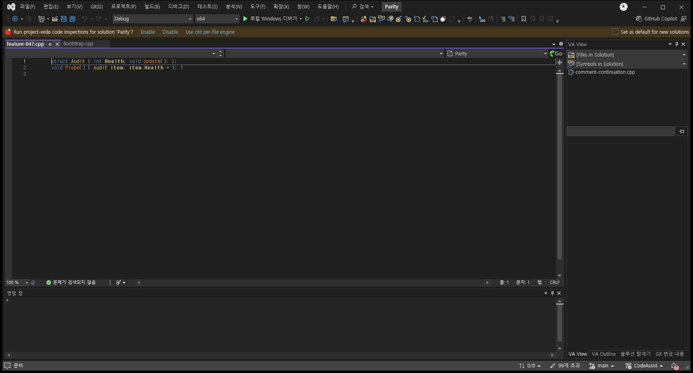
참고 화면](../assets/imports/docs/validation/automated-runner-20261018/20261018-015759-745/screenshots/VA-feature-047-before.png) VA / dialog / captured [참고 화면](../assets/imports/docs/validation/automated-runner-20261018/20261018-015759-745/screenshots/VA-feature-047-dialog.png) VA / after / captured [참고 화면](../assets/imports/docs/validation/automated-runner-20261018/20261018-015759-745/screenshots/VA-feature-047-after.png)
CA / before / captured [참고 화면](../assets/imports/docs/validation/automated-runner-20261018/20261018-015759-745/screenshots/CA-feature-047-before.png) CA / dialog / captured [참고 화면](../assets/imports/docs/validation/automated-runner-20261018/20261018-015759-745/screenshots/CA-feature-047-dialog.png) CA / after / captured [참고 화면](../assets/imports/docs/validation/automated-runner-20261018/20261018-015759-745/screenshots/CA-feature-047-after.png)
feature-048 Feature 48
VA / before / captured [
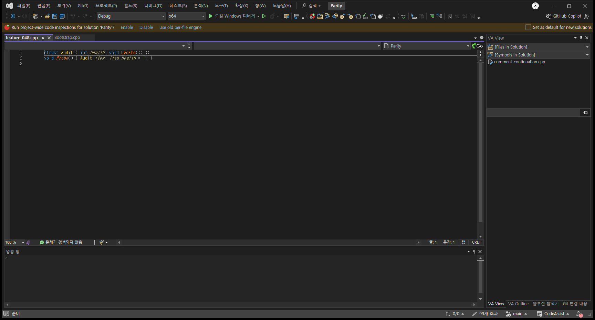
참고 화면](../assets/imports/docs/validation/automated-runner-20261018/20261018-015759-745/screenshots/VA-feature-048-before.png) VA / dialog / missing VA / after / captured [
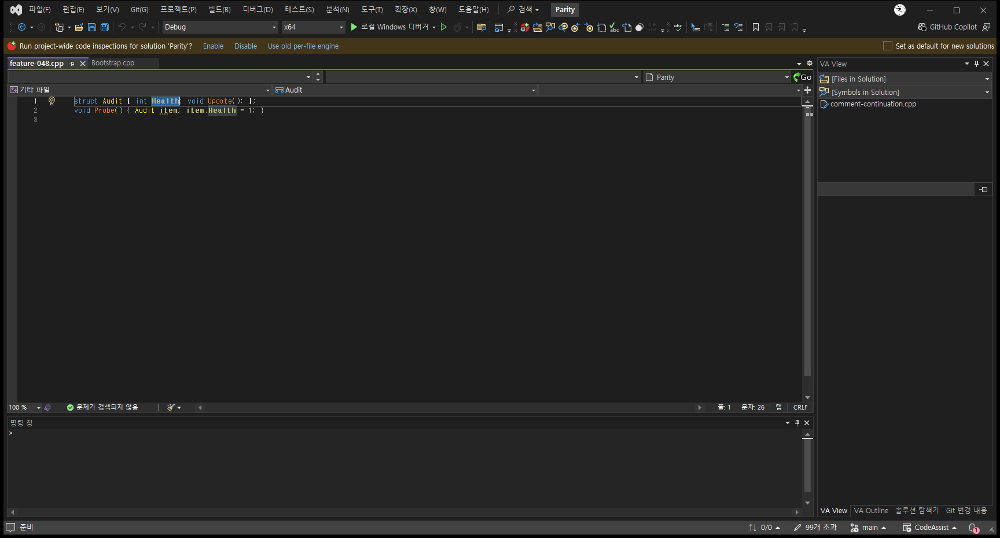
참고 화면](../assets/imports/docs/validation/automated-runner-20261018/20261018-015759-745/screenshots/VA-feature-048-after.png)
CA / before / captured [참고 화면](../assets/imports/docs/validation/automated-runner-20261018/20261018-015759-745/screenshots/CA-feature-048-before.png) CA / dialog / captured [
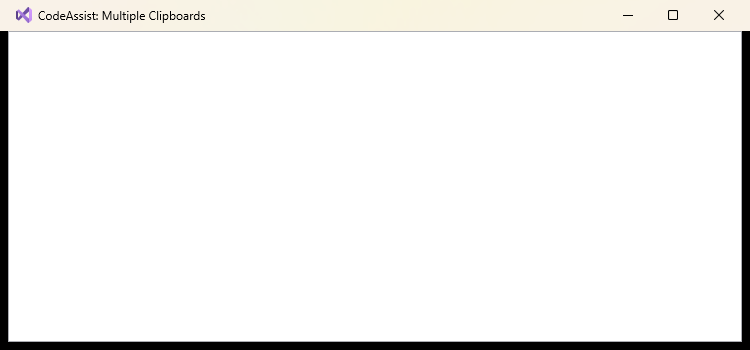
참고 화면](../assets/imports/docs/validation/automated-runner-20261018/20261018-015759-745/screenshots/CA-feature-048-dialog.png) CA / after / captured [참고 화면](../assets/imports/docs/validation/automated-runner-20261018/20261018-015759-745/screenshots/CA-feature-048-after.png)
reset-zoom Feature 49
VA / before / captured [참고 화면](../assets/imports/docs/validation/automated-runner-20261018/20261018-015759-745/screenshots/VA-reset-zoom-before.png) VA / dialog / missing VA / after / captured [참고 화면](../assets/imports/docs/validation/automated-runner-20261018/20261018-015759-745/screenshots/VA-reset-zoom-after.png)
CA / before / captured [참고 화면](../assets/imports/docs/validation/automated-runner-20261018/20261018-015759-745/screenshots/CA-reset-zoom-before.png) CA / dialog / missing CA / after / captured [참고 화면](../assets/imports/docs/validation/automated-runner-20261018/20261018-015759-745/screenshots/CA-reset-zoom-after.png)
shorthand Feature 50
VA / before / captured [참고 화면](../assets/imports/docs/validation/automated-runner-20261018/20261018-015759-745/screenshots/VA-shorthand-before.png) VA / dialog / missing VA / after / captured [참고 화면](../assets/imports/docs/validation/automated-runner-20261018/20261018-015759-745/screenshots/VA-shorthand-after.png)
CA / before / captured [참고 화면](../assets/imports/docs/validation/automated-runner-20261018/20261018-015759-745/screenshots/CA-shorthand-before.png) CA / dialog / missing CA / after / captured [참고 화면](../assets/imports/docs/validation/automated-runner-20261018/20261018-015759-745/screenshots/CA-shorthand-after.png)
smart-select Feature 51
VA / before / captured [
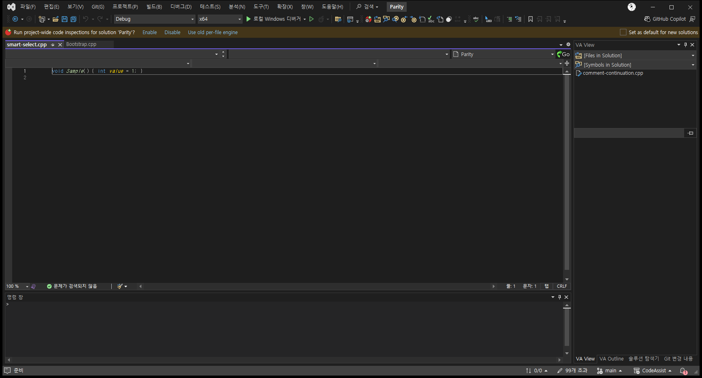
참고 화면](../assets/imports/docs/validation/automated-runner-20261018/20261018-015759-745/screenshots/VA-smart-select-before.png) VA / dialog / missing VA / after / captured [
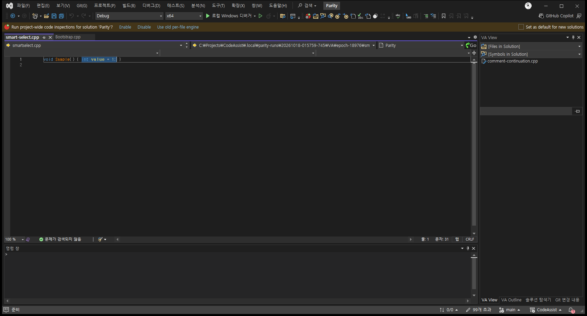
참고 화면](../assets/imports/docs/validation/automated-runner-20261018/20261018-015759-745/screenshots/VA-smart-select-after.png)
CA / before / captured [참고 화면](../assets/imports/docs/validation/automated-runner-20261018/20261018-015759-745/screenshots/CA-smart-select-before.png) CA / dialog / missing CA / after / captured [참고 화면](../assets/imports/docs/validation/automated-runner-20261018/20261018-015759-745/screenshots/CA-smart-select-after.png)
feature-052 Feature 52
VA / before / captured [참고 화면](../assets/imports/docs/validation/automated-runner-20261018/20261018-015759-745/screenshots/VA-feature-052-before.png) VA / dialog / captured [참고 화면](../assets/imports/docs/validation/automated-runner-20261018/20261018-015759-745/screenshots/VA-feature-052-dialog.png) VA / after / captured [참고 화면](../assets/imports/docs/validation/automated-runner-20261018/20261018-015759-745/screenshots/VA-feature-052-after.png)
CA / before / captured [참고 화면](../assets/imports/docs/validation/automated-runner-20261018/20261018-015759-745/screenshots/CA-feature-052-before.png) CA / dialog / captured [참고 화면](../assets/imports/docs/validation/automated-runner-20261018/20261018-015759-745/screenshots/CA-feature-052-dialog.png) CA / after / captured [참고 화면](../assets/imports/docs/validation/automated-runner-20261018/20261018-015759-745/screenshots/CA-feature-052-after.png)
feature-053 Feature 53
VA / before / captured [참고 화면](../assets/imports/docs/validation/automated-runner-20261018/20261018-015759-745/screenshots/VA-feature-053-before.png) VA / dialog / captured [참고 화면](../assets/imports/docs/validation/automated-runner-20261018/20261018-015759-745/screenshots/VA-feature-053-dialog.png) VA / after / captured [참고 화면](../assets/imports/docs/validation/automated-runner-20261018/20261018-015759-745/screenshots/VA-feature-053-after.png)
CA / before / captured [참고 화면](../assets/imports/docs/validation/automated-runner-20261018/20261018-015759-745/screenshots/CA-feature-053-before.png) CA / dialog / captured [참고 화면](../assets/imports/docs/validation/automated-runner-20261018/20261018-015759-745/screenshots/CA-feature-053-dialog.png) CA / after / captured [참고 화면](../assets/imports/docs/validation/automated-runner-20261018/20261018-015759-745/screenshots/CA-feature-053-after.png)
feature-054 Feature 54
VA / before / captured [참고 화면](../assets/imports/docs/validation/automated-runner-20261018/20261018-015759-745/screenshots/VA-feature-054-before.png) VA / dialog / captured [참고 화면](../assets/imports/docs/validation/automated-runner-20261018/20261018-015759-745/screenshots/VA-feature-054-dialog.png) VA / after / captured [참고 화면](../assets/imports/docs/validation/automated-runner-20261018/20261018-015759-745/screenshots/VA-feature-054-after.png)
CA / before / captured [참고 화면](../assets/imports/docs/validation/automated-runner-20261018/20261018-015759-745/screenshots/CA-feature-054-before.png) CA / dialog / captured [참고 화면](../assets/imports/docs/validation/automated-runner-20261018/20261018-015759-745/screenshots/CA-feature-054-dialog.png) CA / after / captured [참고 화면](../assets/imports/docs/validation/automated-runner-20261018/20261018-015759-745/screenshots/CA-feature-054-after.png)
surround-word Feature 55
VA / before / captured [참고 화면](../assets/imports/docs/validation/automated-runner-20261018/20261018-015759-745/screenshots/VA-surround-word-before.png) VA / dialog / missing VA / after / captured [참고 화면](../assets/imports/docs/validation/automated-runner-20261018/20261018-015759-745/screenshots/VA-surround-word-after.png)
CA / before / captured [참고 화면](../assets/imports/docs/validation/automated-runner-20261018/20261018-015759-745/screenshots/CA-surround-word-before.png) CA / dialog / missing CA / after / captured [참고 화면](../assets/imports/docs/validation/automated-runner-20261018/20261018-015759-745/screenshots/CA-surround-word-after.png)
feature-056 Feature 56
VA / before / captured [참고 화면](../assets/imports/docs/validation/automated-runner-20261018/20261018-015759-745/screenshots/VA-feature-056-before.png) VA / dialog / captured [참고 화면](../assets/imports/docs/validation/automated-runner-20261018/20261018-015759-745/screenshots/VA-feature-056-dialog.png) VA / after / captured [참고 화면](../assets/imports/docs/validation/automated-runner-20261018/20261018-015759-745/screenshots/VA-feature-056-after.png)
CA / before / captured [참고 화면](../assets/imports/docs/validation/automated-runner-20261018/20261018-015759-745/screenshots/CA-feature-056-before.png) CA / dialog / captured [참고 화면](../assets/imports/docs/validation/automated-runner-20261018/20261018-015759-745/screenshots/CA-feature-056-dialog.png) CA / after / captured [참고 화면](../assets/imports/docs/validation/automated-runner-20261018/20261018-015759-745/screenshots/CA-feature-056-after.png)
feature-057 Feature 57
VA / before / captured [참고 화면](../assets/imports/docs/validation/automated-runner-20261018/20261018-015759-745/screenshots/VA-feature-057-before.png) VA / dialog / captured [참고 화면](../assets/imports/docs/validation/automated-runner-20261018/20261018-015759-745/screenshots/VA-feature-057-dialog.png) VA / after / captured [참고 화면](../assets/imports/docs/validation/automated-runner-20261018/20261018-015759-745/screenshots/VA-feature-057-after.png)
CA / before / captured [참고 화면](../assets/imports/docs/validation/automated-runner-20261018/20261018-015759-745/screenshots/CA-feature-057-before.png) CA / dialog / captured [참고 화면](../assets/imports/docs/validation/automated-runner-20261018/20261018-015759-745/screenshots/CA-feature-057-dialog.png) CA / after / captured [참고 화면](../assets/imports/docs/validation/automated-runner-20261018/20261018-015759-745/screenshots/CA-feature-057-after.png)
feature-058 Feature 58
VA / before / captured [참고 화면](../assets/imports/docs/validation/automated-runner-20261018/20261018-015759-745/screenshots/VA-feature-058-before.png) VA / dialog / captured [참고 화면](../assets/imports/docs/validation/automated-runner-20261018/20261018-015759-745/screenshots/VA-feature-058-dialog.png) VA / after / captured [참고 화면](../assets/imports/docs/validation/automated-runner-20261018/20261018-015759-745/screenshots/VA-feature-058-after.png)
CA / before / captured [참고 화면](../assets/imports/docs/validation/automated-runner-20261018/20261018-015759-745/screenshots/CA-feature-058-before.png) CA / dialog / captured [참고 화면](../assets/imports/docs/validation/automated-runner-20261018/20261018-015759-745/screenshots/CA-feature-058-dialog.png) CA / after / captured [참고 화면](../assets/imports/docs/validation/automated-runner-20261018/20261018-015759-745/screenshots/CA-feature-058-after.png)
feature-059 Feature 59
VA / before / captured [참고 화면](../assets/imports/docs/validation/automated-runner-20261018/20261018-015759-745/screenshots/VA-feature-059-before.png) VA / dialog / captured [참고 화면](../assets/imports/docs/validation/automated-runner-20261018/20261018-015759-745/screenshots/VA-feature-059-dialog.png) VA / after / captured [참고 화면](../assets/imports/docs/validation/automated-runner-20261018/20261018-015759-745/screenshots/VA-feature-059-after.png)
CA / before / captured [참고 화면](../assets/imports/docs/validation/automated-runner-20261018/20261018-015759-745/screenshots/CA-feature-059-before.png) CA / dialog / captured [참고 화면](../assets/imports/docs/validation/automated-runner-20261018/20261018-015759-745/screenshots/CA-feature-059-dialog.png) CA / after / captured [참고 화면](../assets/imports/docs/validation/automated-runner-20261018/20261018-015759-745/screenshots/CA-feature-059-after.png)
feature-060 Feature 60
VA / before / captured [참고 화면](../assets/imports/docs/validation/automated-runner-20261018/20261018-015759-745/screenshots/VA-feature-060-before.png) VA / dialog / captured [참고 화면](../assets/imports/docs/validation/automated-runner-20261018/20261018-015759-745/screenshots/VA-feature-060-dialog.png) VA / after / captured [참고 화면](../assets/imports/docs/validation/automated-runner-20261018/20261018-015759-745/screenshots/VA-feature-060-after.png)
CA / before / captured [참고 화면](../assets/imports/docs/validation/automated-runner-20261018/20261018-015759-745/screenshots/CA-feature-060-before.png) CA / dialog / captured [참고 화면](../assets/imports/docs/validation/automated-runner-20261018/20261018-015759-745/screenshots/CA-feature-060-dialog.png) CA / after / captured [참고 화면](../assets/imports/docs/validation/automated-runner-20261018/20261018-015759-745/screenshots/CA-feature-060-after.png)
feature-061 Feature 61
VA / before / captured [참고 화면](../assets/imports/docs/validation/automated-runner-20261018/20261018-015759-745/screenshots/VA-feature-061-before.png) VA / dialog / captured [참고 화면](../assets/imports/docs/validation/automated-runner-20261018/20261018-015759-745/screenshots/VA-feature-061-dialog.png) VA / after / captured [참고 화면](../assets/imports/docs/validation/automated-runner-20261018/20261018-015759-745/screenshots/VA-feature-061-after.png)
CA / before / captured [참고 화면](../assets/imports/docs/validation/automated-runner-20261018/20261018-015759-745/screenshots/CA-feature-061-before.png) CA / dialog / captured [참고 화면](../assets/imports/docs/validation/automated-runner-20261018/20261018-015759-745/screenshots/CA-feature-061-dialog.png) CA / after / captured [참고 화면](../assets/imports/docs/validation/automated-runner-20261018/20261018-015759-745/screenshots/CA-feature-061-after.png)
feature-062 Feature 62
VA / before / captured [참고 화면](../assets/imports/docs/validation/automated-runner-20261018/20261018-015759-745/screenshots/VA-feature-062-before.png) VA / dialog / captured [참고 화면](../assets/imports/docs/validation/automated-runner-20261018/20261018-015759-745/screenshots/VA-feature-062-dialog.png) VA / after / captured [참고 화면](../assets/imports/docs/validation/automated-runner-20261018/20261018-015759-745/screenshots/VA-feature-062-after.png)
CA / before / captured [참고 화면](../assets/imports/docs/validation/automated-runner-20261018/20261018-015759-745/screenshots/CA-feature-062-before.png) CA / dialog / captured [참고 화면](../assets/imports/docs/validation/automated-runner-20261018/20261018-015759-745/screenshots/CA-feature-062-dialog.png) CA / after / captured [참고 화면](../assets/imports/docs/validation/automated-runner-20261018/20261018-015759-745/screenshots/CA-feature-062-after.png)
feature-063 Feature 63
VA / before / captured [참고 화면](../assets/imports/docs/validation/automated-runner-20261018/20261018-015759-745/screenshots/VA-feature-063-before.png) VA / dialog / captured [참고 화면](../assets/imports/docs/validation/automated-runner-20261018/20261018-015759-745/screenshots/VA-feature-063-dialog.png) VA / after / captured [참고 화면](../assets/imports/docs/validation/automated-runner-20261018/20261018-015759-745/screenshots/VA-feature-063-after.png)
CA / before / captured [참고 화면](../assets/imports/docs/validation/automated-runner-20261018/20261018-015759-745/screenshots/CA-feature-063-before.png) CA / dialog / captured [참고 화면](../assets/imports/docs/validation/automated-runner-20261018/20261018-015759-745/screenshots/CA-feature-063-dialog.png) CA / after / captured [참고 화면](../assets/imports/docs/validation/automated-runner-20261018/20261018-015759-745/screenshots/CA-feature-063-after.png)
feature-064 Feature 64
VA / before / captured [참고 화면](../assets/imports/docs/validation/automated-runner-20261018/20261018-015759-745/screenshots/VA-feature-064-before.png) VA / dialog / captured [참고 화면](../assets/imports/docs/validation/automated-runner-20261018/20261018-015759-745/screenshots/VA-feature-064-dialog.png) VA / after / captured [참고 화면](../assets/imports/docs/validation/automated-runner-20261018/20261018-015759-745/screenshots/VA-feature-064-after.png)
CA / before / captured [참고 화면](../assets/imports/docs/validation/automated-runner-20261018/20261018-015759-745/screenshots/CA-feature-064-before.png) CA / dialog / captured [참고 화면](../assets/imports/docs/validation/automated-runner-20261018/20261018-015759-745/screenshots/CA-feature-064-dialog.png) CA / after / captured [참고 화면](../assets/imports/docs/validation/automated-runner-20261018/20261018-015759-745/screenshots/CA-feature-064-after.png)
feature-065 Feature 65
VA / before / captured [참고 화면](../assets/imports/docs/validation/automated-runner-20261018/20261018-015759-745/screenshots/VA-feature-065-before.png) VA / dialog / captured [참고 화면](../assets/imports/docs/validation/automated-runner-20261018/20261018-015759-745/screenshots/VA-feature-065-dialog.png) VA / after / captured [참고 화면](../assets/imports/docs/validation/automated-runner-20261018/20261018-015759-745/screenshots/VA-feature-065-after.png)
CA / before / captured [참고 화면](../assets/imports/docs/validation/automated-runner-20261018/20261018-015759-745/screenshots/CA-feature-065-before.png) CA / dialog / captured [참고 화면](../assets/imports/docs/validation/automated-runner-20261018/20261018-015759-745/screenshots/CA-feature-065-dialog.png) CA / after / captured [참고 화면](../assets/imports/docs/validation/automated-runner-20261018/20261018-015759-745/screenshots/CA-feature-065-after.png)
feature-066 Feature 66
VA / before / captured [참고 화면](../assets/imports/docs/validation/automated-runner-20261018/20261018-015759-745/screenshots/VA-feature-066-before.png) VA / dialog / captured [참고 화면](../assets/imports/docs/validation/automated-runner-20261018/20261018-015759-745/screenshots/VA-feature-066-dialog.png) VA / after / captured [참고 화면](../assets/imports/docs/validation/automated-runner-20261018/20261018-015759-745/screenshots/VA-feature-066-after.png)
CA / before / captured [참고 화면](../assets/imports/docs/validation/automated-runner-20261018/20261018-015759-745/screenshots/CA-feature-066-before.png) CA / dialog / captured [참고 화면](../assets/imports/docs/validation/automated-runner-20261018/20261018-015759-745/screenshots/CA-feature-066-dialog.png) CA / after / captured [참고 화면](../assets/imports/docs/validation/automated-runner-20261018/20261018-015759-745/screenshots/CA-feature-066-after.png)
feature-067 Feature 67
VA / before / captured [참고 화면](../assets/imports/docs/validation/automated-runner-20261018/20261018-015759-745/screenshots/VA-feature-067-before.png) VA / dialog / captured [참고 화면](../assets/imports/docs/validation/automated-runner-20261018/20261018-015759-745/screenshots/VA-feature-067-dialog.png) VA / after / captured [참고 화면](../assets/imports/docs/validation/automated-runner-20261018/20261018-015759-745/screenshots/VA-feature-067-after.png)
CA / before / captured [참고 화면](../assets/imports/docs/validation/automated-runner-20261018/20261018-015759-745/screenshots/CA-feature-067-before.png) CA / dialog / captured [참고 화면](../assets/imports/docs/validation/automated-runner-20261018/20261018-015759-745/screenshots/CA-feature-067-dialog.png) CA / after / captured [참고 화면](../assets/imports/docs/validation/automated-runner-20261018/20261018-015759-745/screenshots/CA-feature-067-after.png)
feature-068 Feature 68
VA / before / captured [참고 화면](../assets/imports/docs/validation/automated-runner-20261018/20261018-015759-745/screenshots/VA-feature-068-before.png) VA / dialog / captured [참고 화면](../assets/imports/docs/validation/automated-runner-20261018/20261018-015759-745/screenshots/VA-feature-068-dialog.png) VA / after / captured [참고 화면](../assets/imports/docs/validation/automated-runner-20261018/20261018-015759-745/screenshots/VA-feature-068-after.png)
CA / before / captured [참고 화면](../assets/imports/docs/validation/automated-runner-20261018/20261018-015759-745/screenshots/CA-feature-068-before.png) CA / dialog / captured [참고 화면](../assets/imports/docs/validation/automated-runner-20261018/20261018-015759-745/screenshots/CA-feature-068-dialog.png) CA / after / captured [참고 화면](../assets/imports/docs/validation/automated-runner-20261018/20261018-015759-745/screenshots/CA-feature-068-after.png)
dot-to-arrow Feature 69
VA / before / captured [참고 화면](../assets/imports/docs/validation/automated-runner-20261018/20261018-015759-745/screenshots/VA-dot-to-arrow-before.png) VA / dialog / missing VA / after / captured [참고 화면](../assets/imports/docs/validation/automated-runner-20261018/20261018-015759-745/screenshots/VA-dot-to-arrow-after.png)
CA / before / captured [참고 화면](../assets/imports/docs/validation/automated-runner-20261018/20261018-015759-745/screenshots/CA-dot-to-arrow-before.png) CA / dialog / missing CA / after / captured [참고 화면](../assets/imports/docs/validation/automated-runner-20261018/20261018-015759-745/screenshots/CA-dot-to-arrow-after.png)
feature-070 Feature 70
VA / before / captured [참고 화면](../assets/imports/docs/validation/automated-runner-20261018/20261018-015759-745/screenshots/VA-feature-070-before.png) VA / dialog / captured [참고 화면](../assets/imports/docs/validation/automated-runner-20261018/20261018-015759-745/screenshots/VA-feature-070-dialog.png) VA / after / captured [참고 화면](../assets/imports/docs/validation/automated-runner-20261018/20261018-015759-745/screenshots/VA-feature-070-after.png)
CA / before / captured [참고 화면](../assets/imports/docs/validation/automated-runner-20261018/20261018-015759-745/screenshots/CA-feature-070-before.png) CA / dialog / captured [참고 화면](../assets/imports/docs/validation/automated-runner-20261018/20261018-015759-745/screenshots/CA-feature-070-dialog.png) CA / after / captured [참고 화면](../assets/imports/docs/validation/automated-runner-20261018/20261018-015759-745/screenshots/CA-feature-070-after.png)
feature-071 Feature 71
VA / before / captured [참고 화면](../assets/imports/docs/validation/automated-runner-20261018/20261018-015759-745/screenshots/VA-feature-071-before.png) VA / dialog / captured [참고 화면](../assets/imports/docs/validation/automated-runner-20261018/20261018-015759-745/screenshots/VA-feature-071-dialog.png) VA / after / captured [참고 화면](../assets/imports/docs/validation/automated-runner-20261018/20261018-015759-745/screenshots/VA-feature-071-after.png)
CA / before / captured [참고 화면](../assets/imports/docs/validation/automated-runner-20261018/20261018-015759-745/screenshots/CA-feature-071-before.png) CA / dialog / captured [참고 화면](../assets/imports/docs/validation/automated-runner-20261018/20261018-015759-745/screenshots/CA-feature-071-dialog.png) CA / after / captured [참고 화면](../assets/imports/docs/validation/automated-runner-20261018/20261018-015759-745/screenshots/CA-feature-071-after.png)
feature-072 Feature 72
VA / before / captured [참고 화면](../assets/imports/docs/validation/automated-runner-20261018/20261018-015759-745/screenshots/VA-feature-072-before.png) VA / dialog / captured [참고 화면](../assets/imports/docs/validation/automated-runner-20261018/20261018-015759-745/screenshots/VA-feature-072-dialog.png) VA / after / captured [참고 화면](../assets/imports/docs/validation/automated-runner-20261018/20261018-015759-745/screenshots/VA-feature-072-after.png)
CA / before / captured [참고 화면](../assets/imports/docs/validation/automated-runner-20261018/20261018-015759-745/screenshots/CA-feature-072-before.png) CA / dialog / captured [참고 화면](../assets/imports/docs/validation/automated-runner-20261018/20261018-015759-745/screenshots/CA-feature-072-dialog.png) CA / after / captured [참고 화면](../assets/imports/docs/validation/automated-runner-20261018/20261018-015759-745/screenshots/CA-feature-072-after.png)
repair-case Feature 73
VA / before / captured [참고 화면](../assets/imports/docs/validation/automated-runner-20261018/20261018-015759-745/screenshots/VA-repair-case-before.png) VA / dialog / missing VA / after / captured [참고 화면](../assets/imports/docs/validation/automated-runner-20261018/20261018-015759-745/screenshots/VA-repair-case-after.png)
CA / before / captured [참고 화면](../assets/imports/docs/validation/automated-runner-20261018/20261018-015759-745/screenshots/CA-repair-case-before.png) CA / dialog / missing CA / after / captured [참고 화면](../assets/imports/docs/validation/automated-runner-20261018/20261018-015759-745/screenshots/CA-repair-case-after.png)
feature-074 Feature 74
VA / before / captured [참고 화면](../assets/imports/docs/validation/automated-runner-20261018/20261018-015759-745/screenshots/VA-feature-074-before.png) VA / dialog / captured [참고 화면](../assets/imports/docs/validation/automated-runner-20261018/20261018-015759-745/screenshots/VA-feature-074-dialog.png) VA / after / captured [참고 화면](../assets/imports/docs/validation/automated-runner-20261018/20261018-015759-745/screenshots/VA-feature-074-after.png)
CA / before / captured [참고 화면](../assets/imports/docs/validation/automated-runner-20261018/20261018-015759-745/screenshots/CA-feature-074-before.png) CA / dialog / captured [참고 화면](../assets/imports/docs/validation/automated-runner-20261018/20261018-015759-745/screenshots/CA-feature-074-dialog.png) CA / after / captured [참고 화면](../assets/imports/docs/validation/automated-runner-20261018/20261018-015759-745/screenshots/CA-feature-074-after.png)
feature-075 Feature 75
VA / before / captured [참고 화면](../assets/imports/docs/validation/automated-runner-20261018/20261018-015759-745/screenshots/VA-feature-075-before.png) VA / dialog / captured [참고 화면](../assets/imports/docs/validation/automated-runner-20261018/20261018-015759-745/screenshots/VA-feature-075-dialog.png) VA / after / captured [참고 화면](../assets/imports/docs/validation/automated-runner-20261018/20261018-015759-745/screenshots/VA-feature-075-after.png)
CA / before / captured [참고 화면](../assets/imports/docs/validation/automated-runner-20261018/20261018-015759-745/screenshots/CA-feature-075-before.png) CA / dialog / captured [참고 화면](../assets/imports/docs/validation/automated-runner-20261018/20261018-015759-745/screenshots/CA-feature-075-dialog.png) CA / after / captured [참고 화면](../assets/imports/docs/validation/automated-runner-20261018/20261018-015759-745/screenshots/CA-feature-075-after.png)
feature-076 Feature 76
VA / before / captured [참고 화면](../assets/imports/docs/validation/automated-runner-20261018/20261018-015759-745/screenshots/VA-feature-076-before.png) VA / dialog / captured [참고 화면](../assets/imports/docs/validation/automated-runner-20261018/20261018-015759-745/screenshots/VA-feature-076-dialog.png) VA / after / captured [참고 화면](../assets/imports/docs/validation/automated-runner-20261018/20261018-015759-745/screenshots/VA-feature-076-after.png)
CA / before / captured [참고 화면](../assets/imports/docs/validation/automated-runner-20261018/20261018-015759-745/screenshots/CA-feature-076-before.png) CA / dialog / captured [참고 화면](../assets/imports/docs/validation/automated-runner-20261018/20261018-015759-745/screenshots/CA-feature-076-dialog.png) CA / after / captured [참고 화면](../assets/imports/docs/validation/automated-runner-20261018/20261018-015759-745/screenshots/CA-feature-076-after.png)
feature-077 Feature 77
VA / before / captured [참고 화면](../assets/imports/docs/validation/automated-runner-20261018/20261018-015759-745/screenshots/VA-feature-077-before.png) VA / dialog / captured [참고 화면](../assets/imports/docs/validation/automated-runner-20261018/20261018-015759-745/screenshots/VA-feature-077-dialog.png) VA / after / captured [참고 화면](../assets/imports/docs/validation/automated-runner-20261018/20261018-015759-745/screenshots/VA-feature-077-after.png)
CA / before / captured [참고 화면](../assets/imports/docs/validation/automated-runner-20261018/20261018-015759-745/screenshots/CA-feature-077-before.png) CA / dialog / captured [참고 화면](../assets/imports/docs/validation/automated-runner-20261018/20261018-015759-745/screenshots/CA-feature-077-dialog.png) CA / after / captured [참고 화면](../assets/imports/docs/validation/automated-runner-20261018/20261018-015759-745/screenshots/CA-feature-077-after.png)
feature-078 Feature 78
VA / before / captured [참고 화면](../assets/imports/docs/validation/automated-runner-20261018/20261018-015759-745/screenshots/VA-feature-078-before.png) VA / dialog / captured [참고 화면](../assets/imports/docs/validation/automated-runner-20261018/20261018-015759-745/screenshots/VA-feature-078-dialog.png) VA / after / captured [참고 화면](../assets/imports/docs/validation/automated-runner-20261018/20261018-015759-745/screenshots/VA-feature-078-after.png)
CA / before / captured [참고 화면](../assets/imports/docs/validation/automated-runner-20261018/20261018-015759-745/screenshots/CA-feature-078-before.png) CA / dialog / captured [참고 화면](../assets/imports/docs/validation/automated-runner-20261018/20261018-015759-745/screenshots/CA-feature-078-dialog.png) CA / after / captured [참고 화면](../assets/imports/docs/validation/automated-runner-20261018/20261018-015759-745/screenshots/CA-feature-078-after.png)
feature-079 Feature 79
VA / before / captured [참고 화면](../assets/imports/docs/validation/automated-runner-20261018/20261018-015759-745/screenshots/VA-feature-079-before.png) VA / dialog / captured [참고 화면](../assets/imports/docs/validation/automated-runner-20261018/20261018-015759-745/screenshots/VA-feature-079-dialog.png) VA / after / captured [참고 화면](../assets/imports/docs/validation/automated-runner-20261018/20261018-015759-745/screenshots/VA-feature-079-after.png)
CA / before / captured [참고 화면](../assets/imports/docs/validation/automated-runner-20261018/20261018-015759-745/screenshots/CA-feature-079-before.png) CA / dialog / captured [참고 화면](../assets/imports/docs/validation/automated-runner-20261018/20261018-015759-745/screenshots/CA-feature-079-dialog.png) CA / after / captured [참고 화면](../assets/imports/docs/validation/automated-runner-20261018/20261018-015759-745/screenshots/CA-feature-079-after.png)
feature-080 Feature 80
VA / before / captured [참고 화면](../assets/imports/docs/validation/automated-runner-20261018/20261018-015759-745/screenshots/VA-feature-080-before.png) VA / dialog / captured [참고 화면](../assets/imports/docs/validation/automated-runner-20261018/20261018-015759-745/screenshots/VA-feature-080-dialog.png) VA / after / captured [참고 화면](../assets/imports/docs/validation/automated-runner-20261018/20261018-015759-745/screenshots/VA-feature-080-after.png)
CA / before / captured [참고 화면](../assets/imports/docs/validation/automated-runner-20261018/20261018-015759-745/screenshots/CA-feature-080-before.png) CA / dialog / captured [참고 화면](../assets/imports/docs/validation/automated-runner-20261018/20261018-015759-745/screenshots/CA-feature-080-dialog.png) CA / after / captured [참고 화면](../assets/imports/docs/validation/automated-runner-20261018/20261018-015759-745/screenshots/CA-feature-080-after.png)
feature-081 Feature 81
VA / before / captured [참고 화면](../assets/imports/docs/validation/automated-runner-20261018/20261018-015759-745/screenshots/VA-feature-081-before.png) VA / dialog / captured [참고 화면](../assets/imports/docs/validation/automated-runner-20261018/20261018-015759-745/screenshots/VA-feature-081-dialog.png) VA / after / captured [참고 화면](../assets/imports/docs/validation/automated-runner-20261018/20261018-015759-745/screenshots/VA-feature-081-after.png)
CA / before / captured [참고 화면](../assets/imports/docs/validation/automated-runner-20261018/20261018-015759-745/screenshots/CA-feature-081-before.png) CA / dialog / captured [참고 화면](../assets/imports/docs/validation/automated-runner-20261018/20261018-015759-745/screenshots/CA-feature-081-dialog.png) CA / after / captured [참고 화면](../assets/imports/docs/validation/automated-runner-20261018/20261018-015759-745/screenshots/CA-feature-081-after.png)
feature-082 Feature 82
VA / before / captured [참고 화면](../assets/imports/docs/validation/automated-runner-20261018/20261018-015759-745/screenshots/VA-feature-082-before.png) VA / dialog / captured [참고 화면](../assets/imports/docs/validation/automated-runner-20261018/20261018-015759-745/screenshots/VA-feature-082-dialog.png) VA / after / captured [참고 화면](../assets/imports/docs/validation/automated-runner-20261018/20261018-015759-745/screenshots/VA-feature-082-after.png)
CA / before / captured [참고 화면](../assets/imports/docs/validation/automated-runner-20261018/20261018-015759-745/screenshots/CA-feature-082-before.png) CA / dialog / captured [참고 화면](../assets/imports/docs/validation/automated-runner-20261018/20261018-015759-745/screenshots/CA-feature-082-dialog.png) CA / after / captured [참고 화면](../assets/imports/docs/validation/automated-runner-20261018/20261018-015759-745/screenshots/CA-feature-082-after.png)
feature-083 Feature 83
VA / before / captured [참고 화면](../assets/imports/docs/validation/automated-runner-20261018/20261018-015759-745/screenshots/VA-feature-083-before.png) VA / dialog / captured [참고 화면](../assets/imports/docs/validation/automated-runner-20261018/20261018-015759-745/screenshots/VA-feature-083-dialog.png) VA / after / captured [참고 화면](../assets/imports/docs/validation/automated-runner-20261018/20261018-015759-745/screenshots/VA-feature-083-after.png)
CA / before / captured [참고 화면](../assets/imports/docs/validation/automated-runner-20261018/20261018-015759-745/screenshots/CA-feature-083-before.png) CA / dialog / captured [참고 화면](../assets/imports/docs/validation/automated-runner-20261018/20261018-015759-745/screenshots/CA-feature-083-dialog.png) CA / after / captured [참고 화면](../assets/imports/docs/validation/automated-runner-20261018/20261018-015759-745/screenshots/CA-feature-083-after.png)
feature-084 Feature 84
VA / before / captured [참고 화면](../assets/imports/docs/validation/automated-runner-20261018/20261018-015759-745/screenshots/VA-feature-084-before.png) VA / dialog / captured [참고 화면](../assets/imports/docs/validation/automated-runner-20261018/20261018-015759-745/screenshots/VA-feature-084-dialog.png) VA / after / captured [참고 화면](../assets/imports/docs/validation/automated-runner-20261018/20261018-015759-745/screenshots/VA-feature-084-after.png)
CA / before / captured [참고 화면](../assets/imports/docs/validation/automated-runner-20261018/20261018-015759-745/screenshots/CA-feature-084-before.png) CA / dialog / captured [참고 화면](../assets/imports/docs/validation/automated-runner-20261018/20261018-015759-745/screenshots/CA-feature-084-dialog.png) CA / after / captured [참고 화면](../assets/imports/docs/validation/automated-runner-20261018/20261018-015759-745/screenshots/CA-feature-084-after.png)
feature-085 Feature 85
VA / before / captured [참고 화면](../assets/imports/docs/validation/automated-runner-20261018/20261018-015759-745/screenshots/VA-feature-085-before.png) VA / dialog / missing VA / after / captured [참고 화면](../assets/imports/docs/validation/automated-runner-20261018/20261018-015759-745/screenshots/VA-feature-085-after.png)
CA / before / captured [참고 화면](../assets/imports/docs/validation/automated-runner-20261018/20261018-015759-745/screenshots/CA-feature-085-before.png) CA / dialog / captured [참고 화면](../assets/imports/docs/validation/automated-runner-20261018/20261018-015759-745/screenshots/CA-feature-085-dialog.png) CA / after / captured [참고 화면](../assets/imports/docs/validation/automated-runner-20261018/20261018-015759-745/screenshots/CA-feature-085-after.png)
feature-086 Feature 86
VA / before / captured [참고 화면](../assets/imports/docs/validation/automated-runner-20261018/20261018-015759-745/screenshots/VA-feature-086-before.png) VA / dialog / captured [참고 화면](../assets/imports/docs/validation/automated-runner-20261018/20261018-015759-745/screenshots/VA-feature-086-dialog.png) VA / after / captured [참고 화면](../assets/imports/docs/validation/automated-runner-20261018/20261018-015759-745/screenshots/VA-feature-086-after.png)
CA / before / captured [참고 화면](../assets/imports/docs/validation/automated-runner-20261018/20261018-015759-745/screenshots/CA-feature-086-before.png) CA / dialog / captured [참고 화면](../assets/imports/docs/validation/automated-runner-20261018/20261018-015759-745/screenshots/CA-feature-086-dialog.png) CA / after / captured [참고 화면](../assets/imports/docs/validation/automated-runner-20261018/20261018-015759-745/screenshots/CA-feature-086-after.png)
feature-087 Feature 87
VA / before / captured [참고 화면](../assets/imports/docs/validation/automated-runner-20261018/20261018-015759-745/screenshots/VA-feature-087-before.png) VA / dialog / captured [참고 화면](../assets/imports/docs/validation/automated-runner-20261018/20261018-015759-745/screenshots/VA-feature-087-dialog.png) VA / after / captured [참고 화면](../assets/imports/docs/validation/automated-runner-20261018/20261018-015759-745/screenshots/VA-feature-087-after.png)
CA / before / captured [참고 화면](../assets/imports/docs/validation/automated-runner-20261018/20261018-015759-745/screenshots/CA-feature-087-before.png) CA / dialog / captured [참고 화면](../assets/imports/docs/validation/automated-runner-20261018/20261018-015759-745/screenshots/CA-feature-087-dialog.png) CA / after / captured [참고 화면](../assets/imports/docs/validation/automated-runner-20261018/20261018-015759-745/screenshots/CA-feature-087-after.png)
feature-088 Feature 88
VA / before / captured [참고 화면](../assets/imports/docs/validation/automated-runner-20261018/20261018-015759-745/screenshots/VA-feature-088-before.png) VA / dialog / captured [참고 화면](../assets/imports/docs/validation/automated-runner-20261018/20261018-015759-745/screenshots/VA-feature-088-dialog.png) VA / after / captured [참고 화면](../assets/imports/docs/validation/automated-runner-20261018/20261018-015759-745/screenshots/VA-feature-088-after.png)
CA / before / captured [참고 화면](../assets/imports/docs/validation/automated-runner-20261018/20261018-015759-745/screenshots/CA-feature-088-before.png) CA / dialog / captured [참고 화면](../assets/imports/docs/validation/automated-runner-20261018/20261018-015759-745/screenshots/CA-feature-088-dialog.png) CA / after / captured [참고 화면](../assets/imports/docs/validation/automated-runner-20261018/20261018-015759-745/screenshots/CA-feature-088-after.png)
feature-089 Feature 89
VA / before / captured [참고 화면](../assets/imports/docs/validation/automated-runner-20261018/20261018-015759-745/screenshots/VA-feature-089-before.png) VA / dialog / captured [참고 화면](../assets/imports/docs/validation/automated-runner-20261018/20261018-015759-745/screenshots/VA-feature-089-dialog.png) VA / after / captured [참고 화면](../assets/imports/docs/validation/automated-runner-20261018/20261018-015759-745/screenshots/VA-feature-089-after.png)
CA / before / captured [참고 화면](../assets/imports/docs/validation/automated-runner-20261018/20261018-015759-745/screenshots/CA-feature-089-before.png) CA / dialog / captured [참고 화면](../assets/imports/docs/validation/automated-runner-20261018/20261018-015759-745/screenshots/CA-feature-089-dialog.png) CA / after / captured [참고 화면](../assets/imports/docs/validation/automated-runner-20261018/20261018-015759-745/screenshots/CA-feature-089-after.png)
feature-090 Feature 90
VA / before / captured [참고 화면](../assets/imports/docs/validation/automated-runner-20261018/20261018-015759-745/screenshots/VA-feature-090-before.png) VA / dialog / captured [참고 화면](../assets/imports/docs/validation/automated-runner-20261018/20261018-015759-745/screenshots/VA-feature-090-dialog.png) VA / after / captured [참고 화면](../assets/imports/docs/validation/automated-runner-20261018/20261018-015759-745/screenshots/VA-feature-090-after.png)
CA / before / captured [참고 화면](../assets/imports/docs/validation/automated-runner-20261018/20261018-015759-745/screenshots/CA-feature-090-before.png) CA / dialog / captured [참고 화면](../assets/imports/docs/validation/automated-runner-20261018/20261018-015759-745/screenshots/CA-feature-090-dialog.png) CA / after / captured [참고 화면](../assets/imports/docs/validation/automated-runner-20261018/20261018-015759-745/screenshots/CA-feature-090-after.png)
feature-091 Feature 91
VA / before / captured [참고 화면](../assets/imports/docs/validation/automated-runner-20261018/20261018-015759-745/screenshots/VA-feature-091-before.png) VA / dialog / missing VA / after / captured [참고 화면](../assets/imports/docs/validation/automated-runner-20261018/20261018-015759-745/screenshots/VA-feature-091-after.png)
CA / before / captured [참고 화면](../assets/imports/docs/validation/automated-runner-20261018/20261018-015759-745/screenshots/CA-feature-091-before.png) CA / dialog / captured [참고 화면](../assets/imports/docs/validation/automated-runner-20261018/20261018-015759-745/screenshots/CA-feature-091-dialog.png) CA / after / captured [참고 화면](../assets/imports/docs/validation/automated-runner-20261018/20261018-015759-745/screenshots/CA-feature-091-after.png)
feature-092 Feature 92
VA / before / captured [참고 화면](../assets/imports/docs/validation/automated-runner-20261018/20261018-015759-745/screenshots/VA-feature-092-before.png) VA / dialog / captured [참고 화면](../assets/imports/docs/validation/automated-runner-20261018/20261018-015759-745/screenshots/VA-feature-092-dialog.png) VA / after / captured [참고 화면](../assets/imports/docs/validation/automated-runner-20261018/20261018-015759-745/screenshots/VA-feature-092-after.png)
CA / before / captured [참고 화면](../assets/imports/docs/validation/automated-runner-20261018/20261018-015759-745/screenshots/CA-feature-092-before.png) CA / dialog / captured [참고 화면](../assets/imports/docs/validation/automated-runner-20261018/20261018-015759-745/screenshots/CA-feature-092-dialog.png) CA / after / captured [참고 화면](../assets/imports/docs/validation/automated-runner-20261018/20261018-015759-745/screenshots/CA-feature-092-after.png)
feature-093 Feature 93
VA / before / captured [참고 화면](../assets/imports/docs/validation/automated-runner-20261018/20261018-015759-745/screenshots/VA-feature-093-before.png) VA / dialog / captured [참고 화면](../assets/imports/docs/validation/automated-runner-20261018/20261018-015759-745/screenshots/VA-feature-093-dialog.png) VA / after / captured [참고 화면](../assets/imports/docs/validation/automated-runner-20261018/20261018-015759-745/screenshots/VA-feature-093-after.png)
CA / before / captured [참고 화면](../assets/imports/docs/validation/automated-runner-20261018/20261018-015759-745/screenshots/CA-feature-093-before.png) CA / dialog / captured [참고 화면](../assets/imports/docs/validation/automated-runner-20261018/20261018-015759-745/screenshots/CA-feature-093-dialog.png) CA / after / captured [참고 화면](../assets/imports/docs/validation/automated-runner-20261018/20261018-015759-745/screenshots/CA-feature-093-after.png)
feature-094 Feature 94
VA / before / captured [참고 화면](../assets/imports/docs/validation/automated-runner-20261018/20261018-015759-745/screenshots/VA-feature-094-before.png) VA / dialog / captured [참고 화면](../assets/imports/docs/validation/automated-runner-20261018/20261018-015759-745/screenshots/VA-feature-094-dialog.png) VA / after / captured [참고 화면](../assets/imports/docs/validation/automated-runner-20261018/20261018-015759-745/screenshots/VA-feature-094-after.png)
CA / before / captured [참고 화면](../assets/imports/docs/validation/automated-runner-20261018/20261018-015759-745/screenshots/CA-feature-094-before.png) CA / dialog / captured [참고 화면](../assets/imports/docs/validation/automated-runner-20261018/20261018-015759-745/screenshots/CA-feature-094-dialog.png) CA / after / captured [참고 화면](../assets/imports/docs/validation/automated-runner-20261018/20261018-015759-745/screenshots/CA-feature-094-after.png)
feature-095 Feature 95
VA / before / captured [참고 화면](../assets/imports/docs/validation/automated-runner-20261018/20261018-015759-745/screenshots/VA-feature-095-before.png) VA / dialog / captured [참고 화면](../assets/imports/docs/validation/automated-runner-20261018/20261018-015759-745/screenshots/VA-feature-095-dialog.png) VA / after / captured [참고 화면](../assets/imports/docs/validation/automated-runner-20261018/20261018-015759-745/screenshots/VA-feature-095-after.png)
CA / before / captured [참고 화면](../assets/imports/docs/validation/automated-runner-20261018/20261018-015759-745/screenshots/CA-feature-095-before.png) CA / dialog / captured [참고 화면](../assets/imports/docs/validation/automated-runner-20261018/20261018-015759-745/screenshots/CA-feature-095-dialog.png) CA / after / captured [참고 화면](../assets/imports/docs/validation/automated-runner-20261018/20261018-015759-745/screenshots/CA-feature-095-after.png)
feature-096 Feature 96
VA / before / captured [참고 화면](../assets/imports/docs/validation/automated-runner-20261018/20261018-015759-745/screenshots/VA-feature-096-before.png) VA / dialog / captured [참고 화면](../assets/imports/docs/validation/automated-runner-20261018/20261018-015759-745/screenshots/VA-feature-096-dialog.png) VA / after / captured [참고 화면](../assets/imports/docs/validation/automated-runner-20261018/20261018-015759-745/screenshots/VA-feature-096-after.png)
CA / before / captured [참고 화면](../assets/imports/docs/validation/automated-runner-20261018/20261018-015759-745/screenshots/CA-feature-096-before.png) CA / dialog / captured [참고 화면](../assets/imports/docs/validation/automated-runner-20261018/20261018-015759-745/screenshots/CA-feature-096-dialog.png) CA / after / captured [참고 화면](../assets/imports/docs/validation/automated-runner-20261018/20261018-015759-745/screenshots/CA-feature-096-after.png)
feature-097 Feature 97
VA / before / captured [참고 화면](../assets/imports/docs/validation/automated-runner-20261018/20261018-015759-745/screenshots/VA-feature-097-before.png) VA / dialog / captured [참고 화면](../assets/imports/docs/validation/automated-runner-20261018/20261018-015759-745/screenshots/VA-feature-097-dialog.png) VA / after / captured [참고 화면](../assets/imports/docs/validation/automated-runner-20261018/20261018-015759-745/screenshots/VA-feature-097-after.png)
CA / before / captured [참고 화면](../assets/imports/docs/validation/automated-runner-20261018/20261018-015759-745/screenshots/CA-feature-097-before.png) CA / dialog / captured [참고 화면](../assets/imports/docs/validation/automated-runner-20261018/20261018-015759-745/screenshots/CA-feature-097-dialog.png) CA / after / captured [참고 화면](../assets/imports/docs/validation/automated-runner-20261018/20261018-015759-745/screenshots/CA-feature-097-after.png)
feature-098 Feature 98
VA / before / captured [참고 화면](../assets/imports/docs/validation/automated-runner-20261018/20261018-015759-745/screenshots/VA-feature-098-before.png) VA / dialog / captured [참고 화면](../assets/imports/docs/validation/automated-runner-20261018/20261018-015759-745/screenshots/VA-feature-098-dialog.png) VA / after / captured [참고 화면](../assets/imports/docs/validation/automated-runner-20261018/20261018-015759-745/screenshots/VA-feature-098-after.png)
CA / before / captured [참고 화면](../assets/imports/docs/validation/automated-runner-20261018/20261018-015759-745/screenshots/CA-feature-098-before.png) CA / dialog / captured [참고 화면](../assets/imports/docs/validation/automated-runner-20261018/20261018-015759-745/screenshots/CA-feature-098-dialog.png) CA / after / captured [참고 화면](../assets/imports/docs/validation/automated-runner-20261018/20261018-015759-745/screenshots/CA-feature-098-after.png)
feature-099 Feature 99
VA / before / captured [참고 화면](../assets/imports/docs/validation/automated-runner-20261018/20261018-015759-745/screenshots/VA-feature-099-before.png) VA / dialog / captured [참고 화면](../assets/imports/docs/validation/automated-runner-20261018/20261018-015759-745/screenshots/VA-feature-099-dialog.png) VA / after / captured [참고 화면](../assets/imports/docs/validation/automated-runner-20261018/20261018-015759-745/screenshots/VA-feature-099-after.png)
CA / before / captured [참고 화면](../assets/imports/docs/validation/automated-runner-20261018/20261018-015759-745/screenshots/CA-feature-099-before.png) CA / dialog / captured [참고 화면](../assets/imports/docs/validation/automated-runner-20261018/20261018-015759-745/screenshots/CA-feature-099-dialog.png) CA / after / captured [참고 화면](../assets/imports/docs/validation/automated-runner-20261018/20261018-015759-745/screenshots/CA-feature-099-after.png)
feature-100 Feature 100
VA / before / captured [참고 화면](../assets/imports/docs/validation/automated-runner-20261018/20261018-015759-745/screenshots/VA-feature-100-before.png) VA / dialog / captured [참고 화면](../assets/imports/docs/validation/automated-runner-20261018/20261018-015759-745/screenshots/VA-feature-100-dialog.png) VA / after / captured [참고 화면](../assets/imports/docs/validation/automated-runner-20261018/20261018-015759-745/screenshots/VA-feature-100-after.png)
CA / before / captured [참고 화면](../assets/imports/docs/validation/automated-runner-20261018/20261018-015759-745/screenshots/CA-feature-100-before.png) CA / dialog / captured [참고 화면](../assets/imports/docs/validation/automated-runner-20261018/20261018-015759-745/screenshots/CA-feature-100-dialog.png) CA / after / captured [참고 화면](../assets/imports/docs/validation/automated-runner-20261018/20261018-015759-745/screenshots/CA-feature-100-after.png)
feature-101 Feature 101
VA / before / captured [참고 화면](../assets/imports/docs/validation/automated-runner-20261018/20261018-015759-745/screenshots/VA-feature-101-before.png) VA / dialog / captured [참고 화면](../assets/imports/docs/validation/automated-runner-20261018/20261018-015759-745/screenshots/VA-feature-101-dialog.png) VA / after / captured [참고 화면](../assets/imports/docs/validation/automated-runner-20261018/20261018-015759-745/screenshots/VA-feature-101-after.png)
CA / before / captured [참고 화면](../assets/imports/docs/validation/automated-runner-20261018/20261018-015759-745/screenshots/CA-feature-101-before.png) CA / dialog / captured [참고 화면](../assets/imports/docs/validation/automated-runner-20261018/20261018-015759-745/screenshots/CA-feature-101-dialog.png) CA / after / captured [참고 화면](../assets/imports/docs/validation/automated-runner-20261018/20261018-015759-745/screenshots/CA-feature-101-after.png)
feature-102 Feature 102
VA / before / captured [참고 화면](../assets/imports/docs/validation/automated-runner-20261018/20261018-015759-745/screenshots/VA-feature-102-before.png) VA / dialog / captured [참고 화면](../assets/imports/docs/validation/automated-runner-20261018/20261018-015759-745/screenshots/VA-feature-102-dialog.png) VA / after / captured [참고 화면](../assets/imports/docs/validation/automated-runner-20261018/20261018-015759-745/screenshots/VA-feature-102-after.png)
CA / before / captured [참고 화면](../assets/imports/docs/validation/automated-runner-20261018/20261018-015759-745/screenshots/CA-feature-102-before.png) CA / dialog / captured [참고 화면](../assets/imports/docs/validation/automated-runner-20261018/20261018-015759-745/screenshots/CA-feature-102-dialog.png) CA / after / captured [참고 화면](../assets/imports/docs/validation/automated-runner-20261018/20261018-015759-745/screenshots/CA-feature-102-after.png)
feature-103 Feature 103
VA / before / captured [참고 화면](../assets/imports/docs/validation/automated-runner-20261018/20261018-015759-745/screenshots/VA-feature-103-before.png) VA / dialog / captured [참고 화면](../assets/imports/docs/validation/automated-runner-20261018/20261018-015759-745/screenshots/VA-feature-103-dialog.png) VA / after / captured [참고 화면](../assets/imports/docs/validation/automated-runner-20261018/20261018-015759-745/screenshots/VA-feature-103-after.png)
CA / before / captured [참고 화면](../assets/imports/docs/validation/automated-runner-20261018/20261018-015759-745/screenshots/CA-feature-103-before.png) CA / dialog / captured [참고 화면](../assets/imports/docs/validation/automated-runner-20261018/20261018-015759-745/screenshots/CA-feature-103-dialog.png) CA / after / captured [참고 화면](../assets/imports/docs/validation/automated-runner-20261018/20261018-015759-745/screenshots/CA-feature-103-after.png)
feature-104 Feature 104
VA / before / captured [참고 화면](../assets/imports/docs/validation/automated-runner-20261018/20261018-015759-745/screenshots/VA-feature-104-before.png) VA / dialog / captured [참고 화면](../assets/imports/docs/validation/automated-runner-20261018/20261018-015759-745/screenshots/VA-feature-104-dialog.png) VA / after / captured [참고 화면](../assets/imports/docs/validation/automated-runner-20261018/20261018-015759-745/screenshots/VA-feature-104-after.png)
CA / before / captured [참고 화면](../assets/imports/docs/validation/automated-runner-20261018/20261018-015759-745/screenshots/CA-feature-104-before.png) CA / dialog / captured [참고 화면](../assets/imports/docs/validation/automated-runner-20261018/20261018-015759-745/screenshots/CA-feature-104-dialog.png) CA / after / captured [참고 화면](../assets/imports/docs/validation/automated-runner-20261018/20261018-015759-745/screenshots/CA-feature-104-after.png)
feature-105 Feature 105
VA / before / captured [참고 화면](../assets/imports/docs/validation/automated-runner-20261018/20261018-015759-745/screenshots/VA-feature-105-before.png) VA / dialog / captured [참고 화면](../assets/imports/docs/validation/automated-runner-20261018/20261018-015759-745/screenshots/VA-feature-105-dialog.png) VA / after / captured [참고 화면](../assets/imports/docs/validation/automated-runner-20261018/20261018-015759-745/screenshots/VA-feature-105-after.png)
CA / before / captured [참고 화면](../assets/imports/docs/validation/automated-runner-20261018/20261018-015759-745/screenshots/CA-feature-105-before.png) CA / dialog / captured [참고 화면](../assets/imports/docs/validation/automated-runner-20261018/20261018-015759-745/screenshots/CA-feature-105-dialog.png) CA / after / captured [참고 화면](../assets/imports/docs/validation/automated-runner-20261018/20261018-015759-745/screenshots/CA-feature-105-after.png)
feature-106 Feature 106
VA / before / captured [참고 화면](../assets/imports/docs/validation/automated-runner-20261018/20261018-015759-745/screenshots/VA-feature-106-before.png) VA / dialog / captured [참고 화면](../assets/imports/docs/validation/automated-runner-20261018/20261018-015759-745/screenshots/VA-feature-106-dialog.png) VA / after / captured [참고 화면](../assets/imports/docs/validation/automated-runner-20261018/20261018-015759-745/screenshots/VA-feature-106-after.png)
CA / before / captured [참고 화면](../assets/imports/docs/validation/automated-runner-20261018/20261018-015759-745/screenshots/CA-feature-106-before.png) CA / dialog / captured [참고 화면](../assets/imports/docs/validation/automated-runner-20261018/20261018-015759-745/screenshots/CA-feature-106-dialog.png) CA / after / captured [참고 화면](../assets/imports/docs/validation/automated-runner-20261018/20261018-015759-745/screenshots/CA-feature-106-after.png)
feature-107 Feature 107
VA / before / captured [참고 화면](../assets/imports/docs/validation/automated-runner-20261018/20261018-015759-745/screenshots/VA-feature-107-before.png) VA / dialog / captured [참고 화면](../assets/imports/docs/validation/automated-runner-20261018/20261018-015759-745/screenshots/VA-feature-107-dialog.png) VA / after / captured [참고 화면](../assets/imports/docs/validation/automated-runner-20261018/20261018-015759-745/screenshots/VA-feature-107-after.png)
CA / before / captured [참고 화면](../assets/imports/docs/validation/automated-runner-20261018/20261018-015759-745/screenshots/CA-feature-107-before.png) CA / dialog / captured [참고 화면](../assets/imports/docs/validation/automated-runner-20261018/20261018-015759-745/screenshots/CA-feature-107-dialog.png) CA / after / captured [참고 화면](../assets/imports/docs/validation/automated-runner-20261018/20261018-015759-745/screenshots/CA-feature-107-after.png)
feature-108 Feature 108
VA / before / captured [참고 화면](../assets/imports/docs/validation/automated-runner-20261018/20261018-015759-745/screenshots/VA-feature-108-before.png) VA / dialog / captured [참고 화면](../assets/imports/docs/validation/automated-runner-20261018/20261018-015759-745/screenshots/VA-feature-108-dialog.png) VA / after / captured [참고 화면](../assets/imports/docs/validation/automated-runner-20261018/20261018-015759-745/screenshots/VA-feature-108-after.png)
CA / before / captured [참고 화면](../assets/imports/docs/validation/automated-runner-20261018/20261018-015759-745/screenshots/CA-feature-108-before.png) CA / dialog / captured [참고 화면](../assets/imports/docs/validation/automated-runner-20261018/20261018-015759-745/screenshots/CA-feature-108-dialog.png) CA / after / captured [참고 화면](../assets/imports/docs/validation/automated-runner-20261018/20261018-015759-745/screenshots/CA-feature-108-after.png)
 Tracefolio REPORTS & ISSUES
Tracefolio REPORTS & ISSUES](../assets/imports/docs/validation/automated-runner-20261018/20261018-015759-745/screenshots/VA-feature-001-before.png)
](../assets/imports/docs/validation/automated-runner-20261018/20261018-015759-745/screenshots/VA-feature-001-dialog.png)
](../assets/imports/docs/validation/automated-runner-20261018/20261018-015759-745/screenshots/VA-feature-001-after.png)
](../assets/imports/docs/validation/automated-runner-20261018/20261018-015759-745/screenshots/CA-feature-001-before.png)
](../assets/imports/docs/validation/automated-runner-20261018/20261018-015759-745/screenshots/CA-feature-001-dialog.png)
](../assets/imports/docs/validation/automated-runner-20261018/20261018-015759-745/screenshots/VA-feature-002-dialog.png)
](../assets/imports/docs/validation/automated-runner-20261018/20261018-015759-745/screenshots/CA-feature-002-before.png)
](../assets/imports/docs/validation/automated-runner-20261018/20261018-015759-745/screenshots/CA-feature-002-dialog.png)
](../assets/imports/docs/validation/automated-runner-20261018/20261018-015759-745/screenshots/VA-feature-003-dialog.png)
](../assets/imports/docs/validation/automated-runner-20261018/20261018-015759-745/screenshots/CA-feature-003-dialog.png)
](../assets/imports/docs/validation/automated-runner-20261018/20261018-015759-745/screenshots/VA-feature-004-dialog.png)
](../assets/imports/docs/validation/automated-runner-20261018/20261018-015759-745/screenshots/CA-feature-004-before.png)
](../assets/imports/docs/validation/automated-runner-20261018/20261018-015759-745/screenshots/CA-feature-005-before.png)
](../assets/imports/docs/validation/automated-runner-20261018/20261018-015759-745/screenshots/CA-feature-005-dialog.png)
](../assets/imports/docs/validation/automated-runner-20261018/20261018-015759-745/screenshots/VA-feature-006-dialog.png)
](../assets/imports/docs/validation/automated-runner-20261018/20261018-015759-745/screenshots/CA-feature-006-before.png)
](../assets/imports/docs/validation/automated-runner-20261018/20261018-015759-745/screenshots/CA-feature-006-after.png)
](../assets/imports/docs/validation/automated-runner-20261018/20261018-015759-745/screenshots/VA-feature-007-dialog.png)
](../assets/imports/docs/validation/automated-runner-20261018/20261018-015759-745/screenshots/CA-feature-007-dialog.png)
](../assets/imports/docs/validation/automated-runner-20261018/20261018-015759-745/screenshots/CA-feature-007-after.png)
](../assets/imports/docs/validation/automated-runner-20261018/20261018-015759-745/screenshots/VA-feature-008-before.png)
](../assets/imports/docs/validation/automated-runner-20261018/20261018-015759-745/screenshots/VA-feature-008-dialog.png)
](../assets/imports/docs/validation/automated-runner-20261018/20261018-015759-745/screenshots/VA-feature-008-after.png)
](../assets/imports/docs/validation/automated-runner-20261018/20261018-015759-745/screenshots/CA-feature-008-dialog.png)
](../assets/imports/docs/validation/automated-runner-20261018/20261018-015759-745/screenshots/CA-feature-008-after.png)
](../assets/imports/docs/validation/automated-runner-20261018/20261018-015759-745/screenshots/VA-scope-next-before.png)
](../assets/imports/docs/validation/automated-runner-20261018/20261018-015759-745/screenshots/CA-scope-next-after.png)
](../assets/imports/docs/validation/automated-runner-20261018/20261018-015759-745/screenshots/VA-feature-010-dialog.png)
](../assets/imports/docs/validation/automated-runner-20261018/20261018-015759-745/screenshots/CA-feature-010-before.png)
](../assets/imports/docs/validation/automated-runner-20261018/20261018-015759-745/screenshots/CA-feature-010-dialog.png)
](../assets/imports/docs/validation/automated-runner-20261018/20261018-015759-745/screenshots/VA-feature-011-dialog.png)
](../assets/imports/docs/validation/automated-runner-20261018/20261018-015759-745/screenshots/VA-feature-011-after.png)
](../assets/imports/docs/validation/automated-runner-20261018/20261018-015759-745/screenshots/CA-feature-011-after.png)
](../assets/imports/docs/validation/automated-runner-20261018/20261018-015759-745/screenshots/VA-feature-012-before.png)
](../assets/imports/docs/validation/automated-runner-20261018/20261018-015759-745/screenshots/VA-feature-012-dialog.png)
](../assets/imports/docs/validation/automated-runner-20261018/20261018-015759-745/screenshots/VA-feature-012-after.png)
](../assets/imports/docs/validation/automated-runner-20261018/20261018-015759-745/screenshots/CA-feature-012-before.png)
](../assets/imports/docs/validation/automated-runner-20261018/20261018-015759-745/screenshots/CA-feature-012-dialog.png)
](../assets/imports/docs/validation/automated-runner-20261018/20261018-015759-745/screenshots/VA-feature-013-before.png)
](../assets/imports/docs/validation/automated-runner-20261018/20261018-015759-745/screenshots/VA-feature-013-dialog.png)
](../assets/imports/docs/validation/automated-runner-20261018/20261018-015759-745/screenshots/VA-feature-014-dialog.png)
](../assets/imports/docs/validation/automated-runner-20261018/20261018-015759-745/screenshots/CA-feature-014-before.png)
](../assets/imports/docs/validation/automated-runner-20261018/20261018-015759-745/screenshots/CA-feature-014-dialog.png)
](../assets/imports/docs/validation/automated-runner-20261018/20261018-015759-745/screenshots/VA-feature-015-dialog.png)
](../assets/imports/docs/validation/automated-runner-20261018/20261018-015759-745/screenshots/CA-feature-015-dialog.png)
](../assets/imports/docs/validation/automated-runner-20261018/20261018-015759-745/screenshots/CA-feature-015-after.png)
](../assets/imports/docs/validation/automated-runner-20261018/20261018-015759-745/screenshots/CA-feature-016-dialog.png)
](../assets/imports/docs/validation/automated-runner-20261018/20261018-015759-745/screenshots/CA-feature-016-after.png)
](../assets/imports/docs/validation/automated-runner-20261018/20261018-015759-745/screenshots/VA-feature-017-after.png)
](../assets/imports/docs/validation/automated-runner-20261018/20261018-015759-745/screenshots/CA-feature-017-before.png)
](../assets/imports/docs/validation/automated-runner-20261018/20261018-015759-745/screenshots/CA-feature-017-dialog.png)
](../assets/imports/docs/validation/automated-runner-20261018/20261018-015759-745/screenshots/CA-feature-017-after.png)
](../assets/imports/docs/validation/automated-runner-20261018/20261018-015759-745/screenshots/CA-feature-018-after.png)
](../assets/imports/docs/validation/automated-runner-20261018/20261018-015759-745/screenshots/VA-feature-019-dialog.png)
](../assets/imports/docs/validation/automated-runner-20261018/20261018-015759-745/screenshots/CA-feature-019-before.png)
](../assets/imports/docs/validation/automated-runner-20261018/20261018-015759-745/screenshots/CA-feature-019-after.png)
](../assets/imports/docs/validation/automated-runner-20261018/20261018-015759-745/screenshots/CA-feature-021-before.png)
](../assets/imports/docs/validation/automated-runner-20261018/20261018-015759-745/screenshots/VA-feature-022-after.png)
](../assets/imports/docs/validation/automated-runner-20261018/20261018-015759-745/screenshots/VA-feature-023-before.png)
](../assets/imports/docs/validation/automated-runner-20261018/20261018-015759-745/screenshots/CA-feature-023-dialog.png)
](../assets/imports/docs/validation/automated-runner-20261018/20261018-015759-745/screenshots/CA-feature-023-after.png)
](../assets/imports/docs/validation/automated-runner-20261018/20261018-015759-745/screenshots/CA-feature-024-after.png)
](../assets/imports/docs/validation/automated-runner-20261018/20261018-015759-745/screenshots/VA-feature-025-after.png)
](../assets/imports/docs/validation/automated-runner-20261018/20261018-015759-745/screenshots/CA-feature-025-dialog.png)
](../assets/imports/docs/validation/automated-runner-20261018/20261018-015759-745/screenshots/VA-feature-026-dialog.png)
](../assets/imports/docs/validation/automated-runner-20261018/20261018-015759-745/screenshots/VA-feature-026-after.png)
](../assets/imports/docs/validation/automated-runner-20261018/20261018-015759-745/screenshots/CA-feature-026-before.png)
](../assets/imports/docs/validation/automated-runner-20261018/20261018-015759-745/screenshots/CA-feature-026-after.png)
](../assets/imports/docs/validation/automated-runner-20261018/20261018-015759-745/screenshots/CA-feature-027-before.png)
](../assets/imports/docs/validation/automated-runner-20261018/20261018-015759-745/screenshots/CA-feature-027-dialog.png)
](../assets/imports/docs/validation/automated-runner-20261018/20261018-015759-745/screenshots/CA-feature-028-after.png)
](../assets/imports/docs/validation/automated-runner-20261018/20261018-015759-745/screenshots/VA-feature-029-after.png)
](../assets/imports/docs/validation/automated-runner-20261018/20261018-015759-745/screenshots/CA-feature-029-before.png)
](../assets/imports/docs/validation/automated-runner-20261018/20261018-015759-745/screenshots/VA-feature-030-after.png)
](../assets/imports/docs/validation/automated-runner-20261018/20261018-015759-745/screenshots/CA-feature-031-before.png)
](../assets/imports/docs/validation/automated-runner-20261018/20261018-015759-745/screenshots/CA-feature-031-after.png)
](../assets/imports/docs/validation/automated-runner-20261018/20261018-015759-745/screenshots/VA-feature-033-after.png)
](../assets/imports/docs/validation/automated-runner-20261018/20261018-015759-745/screenshots/CA-feature-033-before.png)
](../assets/imports/docs/validation/automated-runner-20261018/20261018-015759-745/screenshots/CA-feature-033-after.png)
](../assets/imports/docs/validation/automated-runner-20261018/20261018-015759-745/screenshots/CA-feature-034-before.png)
](../assets/imports/docs/validation/automated-runner-20261018/20261018-015759-745/screenshots/CA-feature-034-after.png)
](../assets/imports/docs/validation/automated-runner-20261018/20261018-015759-745/screenshots/VA-feature-035-before.png)
](../assets/imports/docs/validation/automated-runner-20261018/20261018-015759-745/screenshots/VA-feature-036-dialog.png)
](../assets/imports/docs/validation/automated-runner-20261018/20261018-015759-745/screenshots/VA-feature-036-after.png)
](../assets/imports/docs/validation/automated-runner-20261018/20261018-015759-745/screenshots/CA-feature-036-before.png)
](../assets/imports/docs/validation/automated-runner-20261018/20261018-015759-745/screenshots/CA-feature-036-dialog.png)
](../assets/imports/docs/validation/automated-runner-20261018/20261018-015759-745/screenshots/CA-feature-036-after.png)
](../assets/imports/docs/validation/automated-runner-20261018/20261018-015759-745/screenshots/CA-feature-037-before.png)
](../assets/imports/docs/validation/automated-runner-20261018/20261018-015759-745/screenshots/CA-feature-037-after.png)
](../assets/imports/docs/validation/automated-runner-20261018/20261018-015759-745/screenshots/CA-feature-038-dialog.png)
](../assets/imports/docs/validation/automated-runner-20261018/20261018-015759-745/screenshots/CA-feature-038-after.png)
](../assets/imports/docs/validation/automated-runner-20261018/20261018-015759-745/screenshots/VA-feature-039-after.png)
](../assets/imports/docs/validation/automated-runner-20261018/20261018-015759-745/screenshots/CA-feature-039-before.png)
](../assets/imports/docs/validation/automated-runner-20261018/20261018-015759-745/screenshots/CA-feature-039-after.png)
](../assets/imports/docs/validation/automated-runner-20261018/20261018-015759-745/screenshots/VA-feature-041-before.png)
](../assets/imports/docs/validation/automated-runner-20261018/20261018-015759-745/screenshots/CA-feature-041-before.png)
](../assets/imports/docs/validation/automated-runner-20261018/20261018-015759-745/screenshots/VA-acronym-before.png)
](../assets/imports/docs/validation/automated-runner-20261018/20261018-015759-745/screenshots/VA-acronym-after.png)
](../assets/imports/docs/validation/automated-runner-20261018/20261018-015759-745/screenshots/CA-acronym-before.png)
](../assets/imports/docs/validation/automated-runner-20261018/20261018-015759-745/screenshots/VA-comment-continuation-after.png)
](../assets/imports/docs/validation/automated-runner-20261018/20261018-015759-745/screenshots/VA-completion-before.png)
](../assets/imports/docs/validation/automated-runner-20261018/20261018-015759-745/screenshots/VA-completion-after.png)
](../assets/imports/docs/validation/automated-runner-20261018/20261018-015759-745/screenshots/CA-completion-before.png)
](../assets/imports/docs/validation/automated-runner-20261018/20261018-015759-745/screenshots/VA-feature-045-dialog.png)
](../assets/imports/docs/validation/automated-runner-20261018/20261018-015759-745/screenshots/CA-feature-045-before.png)
](../assets/imports/docs/validation/automated-runner-20261018/20261018-015759-745/screenshots/VA-pair-insert-after.png)
](../assets/imports/docs/validation/automated-runner-20261018/20261018-015759-745/screenshots/CA-pair-insert-after.png)
](../assets/imports/docs/validation/automated-runner-20261018/20261018-015759-745/screenshots/VA-feature-047-dialog.png)
](../assets/imports/docs/validation/automated-runner-20261018/20261018-015759-745/screenshots/CA-feature-047-before.png)
](../assets/imports/docs/validation/automated-runner-20261018/20261018-015759-745/screenshots/CA-feature-047-dialog.png)
](../assets/imports/docs/validation/automated-runner-20261018/20261018-015759-745/screenshots/CA-feature-047-after.png)
](../assets/imports/docs/validation/automated-runner-20261018/20261018-015759-745/screenshots/CA-feature-048-after.png)
](../assets/imports/docs/validation/automated-runner-20261018/20261018-015759-745/screenshots/VA-reset-zoom-before.png)
](../assets/imports/docs/validation/automated-runner-20261018/20261018-015759-745/screenshots/VA-reset-zoom-after.png)
](../assets/imports/docs/validation/automated-runner-20261018/20261018-015759-745/screenshots/CA-reset-zoom-before.png)
](../assets/imports/docs/validation/automated-runner-20261018/20261018-015759-745/screenshots/VA-shorthand-before.png)
](../assets/imports/docs/validation/automated-runner-20261018/20261018-015759-745/screenshots/VA-shorthand-after.png)
](../assets/imports/docs/validation/automated-runner-20261018/20261018-015759-745/screenshots/CA-smart-select-before.png)
](../assets/imports/docs/validation/automated-runner-20261018/20261018-015759-745/screenshots/VA-feature-052-dialog.png)
](../assets/imports/docs/validation/automated-runner-20261018/20261018-015759-745/screenshots/CA-feature-052-before.png)
](../assets/imports/docs/validation/automated-runner-20261018/20261018-015759-745/screenshots/CA-feature-052-dialog.png)
](../assets/imports/docs/validation/automated-runner-20261018/20261018-015759-745/screenshots/CA-feature-052-after.png)
](../assets/imports/docs/validation/automated-runner-20261018/20261018-015759-745/screenshots/CA-feature-053-after.png)
](../assets/imports/docs/validation/automated-runner-20261018/20261018-015759-745/screenshots/VA-feature-054-dialog.png)
](../assets/imports/docs/validation/automated-runner-20261018/20261018-015759-745/screenshots/VA-feature-054-after.png)
](../assets/imports/docs/validation/automated-runner-20261018/20261018-015759-745/screenshots/CA-feature-054-before.png)
](../assets/imports/docs/validation/automated-runner-20261018/20261018-015759-745/screenshots/CA-feature-054-dialog.png)
](../assets/imports/docs/validation/automated-runner-20261018/20261018-015759-745/screenshots/VA-surround-word-before.png)
](../assets/imports/docs/validation/automated-runner-20261018/20261018-015759-745/screenshots/VA-surround-word-after.png)
](../assets/imports/docs/validation/automated-runner-20261018/20261018-015759-745/screenshots/CA-surround-word-after.png)
](../assets/imports/docs/validation/automated-runner-20261018/20261018-015759-745/screenshots/VA-feature-056-dialog.png)
](../assets/imports/docs/validation/automated-runner-20261018/20261018-015759-745/screenshots/CA-feature-056-before.png)
](../assets/imports/docs/validation/automated-runner-20261018/20261018-015759-745/screenshots/CA-feature-056-dialog.png)
](../assets/imports/docs/validation/automated-runner-20261018/20261018-015759-745/screenshots/CA-feature-056-after.png)
](../assets/imports/docs/validation/automated-runner-20261018/20261018-015759-745/screenshots/VA-feature-057-before.png)
](../assets/imports/docs/validation/automated-runner-20261018/20261018-015759-745/screenshots/VA-feature-057-dialog.png)
](../assets/imports/docs/validation/automated-runner-20261018/20261018-015759-745/screenshots/CA-feature-057-dialog.png)
](../assets/imports/docs/validation/automated-runner-20261018/20261018-015759-745/screenshots/VA-feature-058-dialog.png)
](../assets/imports/docs/validation/automated-runner-20261018/20261018-015759-745/screenshots/CA-feature-058-before.png)
](../assets/imports/docs/validation/automated-runner-20261018/20261018-015759-745/screenshots/CA-feature-058-dialog.png)
](../assets/imports/docs/validation/automated-runner-20261018/20261018-015759-745/screenshots/VA-feature-059-dialog.png)
](../assets/imports/docs/validation/automated-runner-20261018/20261018-015759-745/screenshots/CA-feature-059-dialog.png)
](../assets/imports/docs/validation/automated-runner-20261018/20261018-015759-745/screenshots/VA-feature-060-dialog.png)
](../assets/imports/docs/validation/automated-runner-20261018/20261018-015759-745/screenshots/CA-feature-060-before.png)
](../assets/imports/docs/validation/automated-runner-20261018/20261018-015759-745/screenshots/CA-feature-060-dialog.png)
](../assets/imports/docs/validation/automated-runner-20261018/20261018-015759-745/screenshots/VA-feature-061-dialog.png)
](../assets/imports/docs/validation/automated-runner-20261018/20261018-015759-745/screenshots/CA-feature-061-before.png)
](../assets/imports/docs/validation/automated-runner-20261018/20261018-015759-745/screenshots/CA-feature-061-after.png)
](../assets/imports/docs/validation/automated-runner-20261018/20261018-015759-745/screenshots/VA-feature-062-dialog.png)
](../assets/imports/docs/validation/automated-runner-20261018/20261018-015759-745/screenshots/CA-feature-062-dialog.png)
](../assets/imports/docs/validation/automated-runner-20261018/20261018-015759-745/screenshots/VA-feature-063-dialog.png)
](../assets/imports/docs/validation/automated-runner-20261018/20261018-015759-745/screenshots/CA-feature-063-before.png)
](../assets/imports/docs/validation/automated-runner-20261018/20261018-015759-745/screenshots/CA-feature-063-dialog.png)
](../assets/imports/docs/validation/automated-runner-20261018/20261018-015759-745/screenshots/CA-feature-063-after.png)
](../assets/imports/docs/validation/automated-runner-20261018/20261018-015759-745/screenshots/VA-feature-064-before.png)
](../assets/imports/docs/validation/automated-runner-20261018/20261018-015759-745/screenshots/VA-feature-064-dialog.png)
](../assets/imports/docs/validation/automated-runner-20261018/20261018-015759-745/screenshots/CA-feature-064-before.png)
](../assets/imports/docs/validation/automated-runner-20261018/20261018-015759-745/screenshots/CA-feature-064-dialog.png)
](../assets/imports/docs/validation/automated-runner-20261018/20261018-015759-745/screenshots/CA-feature-064-after.png)
](../assets/imports/docs/validation/automated-runner-20261018/20261018-015759-745/screenshots/VA-feature-065-dialog.png)
](../assets/imports/docs/validation/automated-runner-20261018/20261018-015759-745/screenshots/VA-feature-065-after.png)
](../assets/imports/docs/validation/automated-runner-20261018/20261018-015759-745/screenshots/CA-feature-065-before.png)
](../assets/imports/docs/validation/automated-runner-20261018/20261018-015759-745/screenshots/CA-feature-065-dialog.png)
](../assets/imports/docs/validation/automated-runner-20261018/20261018-015759-745/screenshots/VA-feature-066-dialog.png)
](../assets/imports/docs/validation/automated-runner-20261018/20261018-015759-745/screenshots/CA-feature-066-after.png)
](../assets/imports/docs/validation/automated-runner-20261018/20261018-015759-745/screenshots/VA-feature-067-dialog.png)
](../assets/imports/docs/validation/automated-runner-20261018/20261018-015759-745/screenshots/CA-feature-067-before.png)
](../assets/imports/docs/validation/automated-runner-20261018/20261018-015759-745/screenshots/CA-feature-067-dialog.png)
](../assets/imports/docs/validation/automated-runner-20261018/20261018-015759-745/screenshots/VA-feature-068-dialog.png)
](../assets/imports/docs/validation/automated-runner-20261018/20261018-015759-745/screenshots/CA-feature-068-dialog.png)
](../assets/imports/docs/validation/automated-runner-20261018/20261018-015759-745/screenshots/CA-feature-068-after.png)
](../assets/imports/docs/validation/automated-runner-20261018/20261018-015759-745/screenshots/VA-feature-070-dialog.png)
](../assets/imports/docs/validation/automated-runner-20261018/20261018-015759-745/screenshots/CA-feature-070-after.png)
](../assets/imports/docs/validation/automated-runner-20261018/20261018-015759-745/screenshots/VA-feature-071-dialog.png)
](../assets/imports/docs/validation/automated-runner-20261018/20261018-015759-745/screenshots/CA-feature-071-before.png)
](../assets/imports/docs/validation/automated-runner-20261018/20261018-015759-745/screenshots/CA-feature-071-after.png)
](../assets/imports/docs/validation/automated-runner-20261018/20261018-015759-745/screenshots/VA-feature-072-before.png)
](../assets/imports/docs/validation/automated-runner-20261018/20261018-015759-745/screenshots/VA-feature-072-dialog.png)
](../assets/imports/docs/validation/automated-runner-20261018/20261018-015759-745/screenshots/CA-feature-072-before.png)
](../assets/imports/docs/validation/automated-runner-20261018/20261018-015759-745/screenshots/CA-feature-072-dialog.png)
](../assets/imports/docs/validation/automated-runner-20261018/20261018-015759-745/screenshots/CA-feature-072-after.png)
](../assets/imports/docs/validation/automated-runner-20261018/20261018-015759-745/screenshots/VA-repair-case-after.png)
](../assets/imports/docs/validation/automated-runner-20261018/20261018-015759-745/screenshots/CA-repair-case-before.png)
](../assets/imports/docs/validation/automated-runner-20261018/20261018-015759-745/screenshots/CA-repair-case-after.png)
](../assets/imports/docs/validation/automated-runner-20261018/20261018-015759-745/screenshots/VA-feature-074-before.png)
](../assets/imports/docs/validation/automated-runner-20261018/20261018-015759-745/screenshots/VA-feature-074-dialog.png)
](../assets/imports/docs/validation/automated-runner-20261018/20261018-015759-745/screenshots/CA-feature-074-before.png)
](../assets/imports/docs/validation/automated-runner-20261018/20261018-015759-745/screenshots/VA-feature-075-dialog.png)
](../assets/imports/docs/validation/automated-runner-20261018/20261018-015759-745/screenshots/CA-feature-075-before.png)
](../assets/imports/docs/validation/automated-runner-20261018/20261018-015759-745/screenshots/CA-feature-075-dialog.png)
](../assets/imports/docs/validation/automated-runner-20261018/20261018-015759-745/screenshots/CA-feature-075-after.png)
](../assets/imports/docs/validation/automated-runner-20261018/20261018-015759-745/screenshots/VA-feature-076-dialog.png)
](../assets/imports/docs/validation/automated-runner-20261018/20261018-015759-745/screenshots/VA-feature-077-before.png)
](../assets/imports/docs/validation/automated-runner-20261018/20261018-015759-745/screenshots/VA-feature-077-dialog.png)
](../assets/imports/docs/validation/automated-runner-20261018/20261018-015759-745/screenshots/VA-feature-078-dialog.png)
](../assets/imports/docs/validation/automated-runner-20261018/20261018-015759-745/screenshots/CA-feature-078-dialog.png)
](../assets/imports/docs/validation/automated-runner-20261018/20261018-015759-745/screenshots/VA-feature-079-dialog.png)
](../assets/imports/docs/validation/automated-runner-20261018/20261018-015759-745/screenshots/CA-feature-079-before.png)
](../assets/imports/docs/validation/automated-runner-20261018/20261018-015759-745/screenshots/CA-feature-079-dialog.png)
](../assets/imports/docs/validation/automated-runner-20261018/20261018-015759-745/screenshots/CA-feature-079-after.png)
](../assets/imports/docs/validation/automated-runner-20261018/20261018-015759-745/screenshots/VA-feature-080-dialog.png)
](../assets/imports/docs/validation/automated-runner-20261018/20261018-015759-745/screenshots/VA-feature-080-after.png)
](../assets/imports/docs/validation/automated-runner-20261018/20261018-015759-745/screenshots/CA-feature-080-dialog.png)
](../assets/imports/docs/validation/automated-runner-20261018/20261018-015759-745/screenshots/CA-feature-080-after.png)
](../assets/imports/docs/validation/automated-runner-20261018/20261018-015759-745/screenshots/VA-feature-081-dialog.png)
](../assets/imports/docs/validation/automated-runner-20261018/20261018-015759-745/screenshots/VA-feature-081-after.png)
](../assets/imports/docs/validation/automated-runner-20261018/20261018-015759-745/screenshots/CA-feature-081-after.png)
](../assets/imports/docs/validation/automated-runner-20261018/20261018-015759-745/screenshots/VA-feature-082-dialog.png)
](../assets/imports/docs/validation/automated-runner-20261018/20261018-015759-745/screenshots/CA-feature-082-dialog.png)
](../assets/imports/docs/validation/automated-runner-20261018/20261018-015759-745/screenshots/CA-feature-082-after.png)
](../assets/imports/docs/validation/automated-runner-20261018/20261018-015759-745/screenshots/VA-feature-083-dialog.png)
](../assets/imports/docs/validation/automated-runner-20261018/20261018-015759-745/screenshots/CA-feature-083-before.png)
](../assets/imports/docs/validation/automated-runner-20261018/20261018-015759-745/screenshots/VA-feature-084-dialog.png)
](../assets/imports/docs/validation/automated-runner-20261018/20261018-015759-745/screenshots/CA-feature-084-dialog.png)
](../assets/imports/docs/validation/automated-runner-20261018/20261018-015759-745/screenshots/VA-feature-085-before.png)
](../assets/imports/docs/validation/automated-runner-20261018/20261018-015759-745/screenshots/VA-feature-085-after.png)
](../assets/imports/docs/validation/automated-runner-20261018/20261018-015759-745/screenshots/CA-feature-085-before.png)
](../assets/imports/docs/validation/automated-runner-20261018/20261018-015759-745/screenshots/CA-feature-085-dialog.png)
](../assets/imports/docs/validation/automated-runner-20261018/20261018-015759-745/screenshots/CA-feature-085-after.png)
](../assets/imports/docs/validation/automated-runner-20261018/20261018-015759-745/screenshots/VA-feature-086-dialog.png)
](../assets/imports/docs/validation/automated-runner-20261018/20261018-015759-745/screenshots/CA-feature-086-before.png)
](../assets/imports/docs/validation/automated-runner-20261018/20261018-015759-745/screenshots/CA-feature-086-dialog.png)
](../assets/imports/docs/validation/automated-runner-20261018/20261018-015759-745/screenshots/VA-feature-087-dialog.png)
](../assets/imports/docs/validation/automated-runner-20261018/20261018-015759-745/screenshots/CA-feature-087-dialog.png)
](../assets/imports/docs/validation/automated-runner-20261018/20261018-015759-745/screenshots/VA-feature-088-after.png)
](../assets/imports/docs/validation/automated-runner-20261018/20261018-015759-745/screenshots/CA-feature-088-before.png)
](../assets/imports/docs/validation/automated-runner-20261018/20261018-015759-745/screenshots/CA-feature-088-dialog.png)
](../assets/imports/docs/validation/automated-runner-20261018/20261018-015759-745/screenshots/VA-feature-089-dialog.png)
](../assets/imports/docs/validation/automated-runner-20261018/20261018-015759-745/screenshots/CA-feature-089-before.png)
](../assets/imports/docs/validation/automated-runner-20261018/20261018-015759-745/screenshots/CA-feature-089-dialog.png)
](../assets/imports/docs/validation/automated-runner-20261018/20261018-015759-745/screenshots/CA-feature-089-after.png)
](../assets/imports/docs/validation/automated-runner-20261018/20261018-015759-745/screenshots/VA-feature-090-dialog.png)
](../assets/imports/docs/validation/automated-runner-20261018/20261018-015759-745/screenshots/VA-feature-090-after.png)
](../assets/imports/docs/validation/automated-runner-20261018/20261018-015759-745/screenshots/CA-feature-090-dialog.png)
](../assets/imports/docs/validation/automated-runner-20261018/20261018-015759-745/screenshots/VA-feature-091-after.png)
](../assets/imports/docs/validation/automated-runner-20261018/20261018-015759-745/screenshots/CA-feature-091-before.png)
](../assets/imports/docs/validation/automated-runner-20261018/20261018-015759-745/screenshots/CA-feature-091-after.png)
](../assets/imports/docs/validation/automated-runner-20261018/20261018-015759-745/screenshots/VA-feature-092-dialog.png)
](../assets/imports/docs/validation/automated-runner-20261018/20261018-015759-745/screenshots/VA-feature-092-after.png)
](../assets/imports/docs/validation/automated-runner-20261018/20261018-015759-745/screenshots/CA-feature-092-after.png)
](../assets/imports/docs/validation/automated-runner-20261018/20261018-015759-745/screenshots/VA-feature-093-dialog.png)
](../assets/imports/docs/validation/automated-runner-20261018/20261018-015759-745/screenshots/CA-feature-093-dialog.png)
](../assets/imports/docs/validation/automated-runner-20261018/20261018-015759-745/screenshots/VA-feature-094-dialog.png)
](../assets/imports/docs/validation/automated-runner-20261018/20261018-015759-745/screenshots/VA-feature-094-after.png)
](../assets/imports/docs/validation/automated-runner-20261018/20261018-015759-745/screenshots/CA-feature-094-before.png)
](../assets/imports/docs/validation/automated-runner-20261018/20261018-015759-745/screenshots/CA-feature-094-dialog.png)
](../assets/imports/docs/validation/automated-runner-20261018/20261018-015759-745/screenshots/VA-feature-095-dialog.png)
](../assets/imports/docs/validation/automated-runner-20261018/20261018-015759-745/screenshots/VA-feature-095-after.png)
](../assets/imports/docs/validation/automated-runner-20261018/20261018-015759-745/screenshots/CA-feature-095-dialog.png)
](../assets/imports/docs/validation/automated-runner-20261018/20261018-015759-745/screenshots/VA-feature-096-dialog.png)
](../assets/imports/docs/validation/automated-runner-20261018/20261018-015759-745/screenshots/VA-feature-096-after.png)
](../assets/imports/docs/validation/automated-runner-20261018/20261018-015759-745/screenshots/VA-feature-097-before.png)
](../assets/imports/docs/validation/automated-runner-20261018/20261018-015759-745/screenshots/VA-feature-097-dialog.png)
](../assets/imports/docs/validation/automated-runner-20261018/20261018-015759-745/screenshots/CA-feature-097-before.png)
](../assets/imports/docs/validation/automated-runner-20261018/20261018-015759-745/screenshots/CA-feature-097-dialog.png)
](../assets/imports/docs/validation/automated-runner-20261018/20261018-015759-745/screenshots/CA-feature-098-dialog.png)
](../assets/imports/docs/validation/automated-runner-20261018/20261018-015759-745/screenshots/VA-feature-099-dialog.png)
](../assets/imports/docs/validation/automated-runner-20261018/20261018-015759-745/screenshots/VA-feature-099-after.png)
](../assets/imports/docs/validation/automated-runner-20261018/20261018-015759-745/screenshots/CA-feature-099-before.png)
](../assets/imports/docs/validation/automated-runner-20261018/20261018-015759-745/screenshots/CA-feature-099-dialog.png)
](../assets/imports/docs/validation/automated-runner-20261018/20261018-015759-745/screenshots/CA-feature-099-after.png)
](../assets/imports/docs/validation/automated-runner-20261018/20261018-015759-745/screenshots/VA-feature-100-before.png)
](../assets/imports/docs/validation/automated-runner-20261018/20261018-015759-745/screenshots/VA-feature-100-dialog.png)
](../assets/imports/docs/validation/automated-runner-20261018/20261018-015759-745/screenshots/CA-feature-100-before.png)
](../assets/imports/docs/validation/automated-runner-20261018/20261018-015759-745/screenshots/CA-feature-100-dialog.png)
](../assets/imports/docs/validation/automated-runner-20261018/20261018-015759-745/screenshots/CA-feature-100-after.png)
](../assets/imports/docs/validation/automated-runner-20261018/20261018-015759-745/screenshots/VA-feature-101-before.png)
](../assets/imports/docs/validation/automated-runner-20261018/20261018-015759-745/screenshots/VA-feature-101-dialog.png)
](../assets/imports/docs/validation/automated-runner-20261018/20261018-015759-745/screenshots/VA-feature-101-after.png)
](../assets/imports/docs/validation/automated-runner-20261018/20261018-015759-745/screenshots/CA-feature-101-before.png)
](../assets/imports/docs/validation/automated-runner-20261018/20261018-015759-745/screenshots/CA-feature-101-dialog.png)
](../assets/imports/docs/validation/automated-runner-20261018/20261018-015759-745/screenshots/VA-feature-102-dialog.png)
](../assets/imports/docs/validation/automated-runner-20261018/20261018-015759-745/screenshots/VA-feature-102-after.png)
](../assets/imports/docs/validation/automated-runner-20261018/20261018-015759-745/screenshots/CA-feature-102-before.png)
](../assets/imports/docs/validation/automated-runner-20261018/20261018-015759-745/screenshots/CA-feature-102-dialog.png)
](../assets/imports/docs/validation/automated-runner-20261018/20261018-015759-745/screenshots/VA-feature-103-dialog.png)
](../assets/imports/docs/validation/automated-runner-20261018/20261018-015759-745/screenshots/CA-feature-103-dialog.png)
](../assets/imports/docs/validation/automated-runner-20261018/20261018-015759-745/screenshots/CA-feature-103-after.png)
](../assets/imports/docs/validation/automated-runner-20261018/20261018-015759-745/screenshots/VA-feature-104-before.png)
](../assets/imports/docs/validation/automated-runner-20261018/20261018-015759-745/screenshots/VA-feature-104-dialog.png)
](../assets/imports/docs/validation/automated-runner-20261018/20261018-015759-745/screenshots/CA-feature-104-before.png)
](../assets/imports/docs/validation/automated-runner-20261018/20261018-015759-745/screenshots/CA-feature-104-dialog.png)
](../assets/imports/docs/validation/automated-runner-20261018/20261018-015759-745/screenshots/VA-feature-105-dialog.png)
](../assets/imports/docs/validation/automated-runner-20261018/20261018-015759-745/screenshots/VA-feature-105-after.png)
](../assets/imports/docs/validation/automated-runner-20261018/20261018-015759-745/screenshots/CA-feature-105-before.png)
](../assets/imports/docs/validation/automated-runner-20261018/20261018-015759-745/screenshots/VA-feature-106-dialog.png)
](../assets/imports/docs/validation/automated-runner-20261018/20261018-015759-745/screenshots/VA-feature-107-before.png)
](../assets/imports/docs/validation/automated-runner-20261018/20261018-015759-745/screenshots/VA-feature-107-dialog.png)
](../assets/imports/docs/validation/automated-runner-20261018/20261018-015759-745/screenshots/VA-feature-107-after.png)
](../assets/imports/docs/validation/automated-runner-20261018/20261018-015759-745/screenshots/CA-feature-107-dialog.png)
](../assets/imports/docs/validation/automated-runner-20261018/20261018-015759-745/screenshots/VA-feature-108-before.png)
](../assets/imports/docs/validation/automated-runner-20261018/20261018-015759-745/screenshots/VA-feature-108-dialog.png)
](../assets/imports/docs/validation/automated-runner-20261018/20261018-015759-745/screenshots/CA-feature-108-dialog.png)